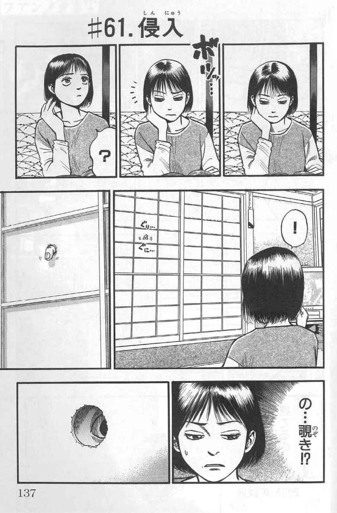
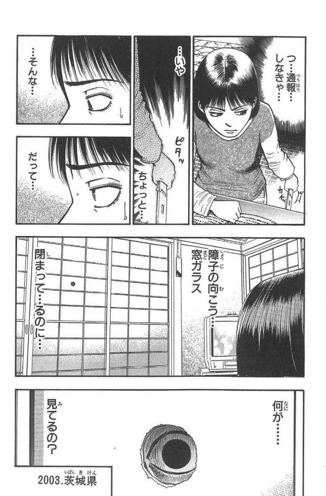
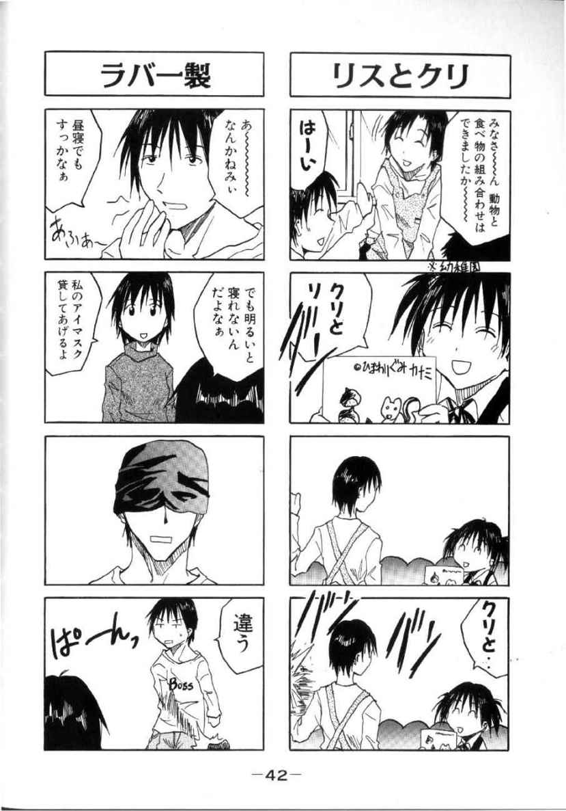
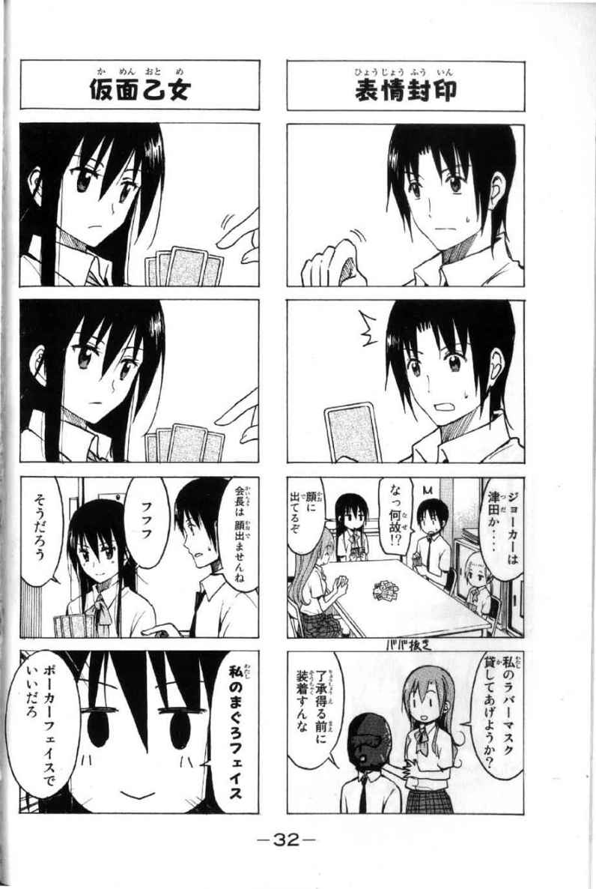
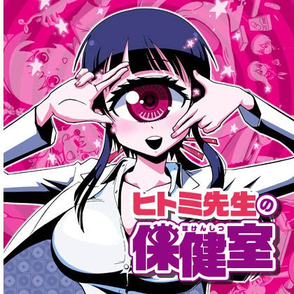

| 純粋娯楽創作理論 第一章・面白さの基礎原理 | |
| 鳥山 仁 | |
| kaikan shobou (2014) | |
『純粋娯楽創作理論』は三章構成の予定で執筆されています。
第一章が本書で、娯楽創作の中核である面白さの原理について解説しています。第二章では面白さを物語にどう反映させていくのかという方法論について、第三章では実際に小説やシナリオを執筆する際に必要な道具類や文章テクニックについて記述する予定です。
従って、第一章に該当する本書では、どうやって小説やシナリオを書けばいいのかといった、実作に関する具体的な説明がそれほど出てきません。もしも、即効性のある小説の書き方を求めているのだとしたら、本書を読むのは時間の無駄です。さっさと別のマニュアル本にあたることをお奨めします。
第一章の狙いは娯楽の基礎原理を学習し、何が面白くて何が詰まらないのかを見分ける能力を身につけることと、それと並行して創作物を幾つかの要素に分解して吟味する能力を身につけることにあります。
第一章に書かれていることを理解できるようになれば、貴方は娯楽創作物を解析し、どこが面白くて、どこが詰まらないのかを判断することが可能になるでしょう。また、自分自身で娯楽作品を書く前の段階で、その作品が面白くなるか詰まらなくなるかを自己検証することも可能になります。
もしも、こうした知見が必要ないという方は、やはり本書を読んでも時間の無駄にしかなりません。さっさと別のマニュアル本にあたることをお奨めします。
しかし、遠回りしても娯楽創作で大きな失敗をしたくない、という方には本書を是非お薦めします。前述したように、第一章に記述されている理論を身につければ、創作する際に自己検証をすることによって、取り返しがつかないほど詰まらない作品を書いてしまう可能性を、ある程度まで下げることが可能だからです。
また、その過程でご自身が娯楽小説にむいた素質の持ち主なのか、あるいはそうでないかの自己判断もできるようになるはずです。しかし、もしも「才能がない」という結論に至ったとしても、がっかりする必要はありません。
本文でも繰り返し言及していますが、娯楽創作と商業創作は必ずしも一致しているわけではありません。従って、娯楽に対する勘が鈍くても、商業的に成功を収められる小説やシナリオを執筆することは幾らでも可能です。また、本書には娯楽小説に向かない作家志望者でも、書きやすいストーリーパターンを暗記することによって、商業作家として水準以上の作品が書けるようにするためのトレーニング方法を幾つか提示してあります。
本書の最大の特徴は、理論の独自性です。その原因は、欧米の学術界で面白さを論理的に考察した研究が少ないことに起因します。これは、欧米における学問の多くが娯楽を重視しなかったという歴史的経緯、及びに現代の日本と比べると表現の自由がそれほど無いため、研究者が豊富な事例を収集できなかったという状況と無関係ではないでしょう。
本書に書かれている理論の独自性に関しては、第一章・第二項まで読み進めれば、ある程度分かるようになっています。また、そこまで読み進めた段階で、やはり本書が不要だという方も出てくるでしょうが、こればかりは仕方がありません。どのような人間も納得させられる、万能の理論などこの世に存在しないからです。
ただし、これを裏返せば、本書に記述された理論体系がマッチする方も存在する、ということになります。そんな皆さんに、本書が娯楽創作の理解と執筆に少しでもお役に立てれば幸甚です。
●第一章・第一項 本書の目的
本書は娯楽小説を執筆する際に必要な理論と技術を説明する目的で執筆されています。
本書で定義する娯楽小説とは「読者を面白がらせる目的で書かれた作品」を指します。従って、本書の内容は次の目的に適合しておりません。
①物語を包括的に論理化する。
本書が対象としているのは、あくまでも娯楽小説であって、他のジャンルに分類される小説や物語は考察の対象外となっております。もっと分かりやすく言うと、本書では詰まらない小説や物語と、面白い小説と物語を同等に扱うことはありません。
批評や評論をしたい人には「あらゆる物語」を包括的に解析できる方法があると主張したり、またそうした方法を提示したがる傾向があります。しかし、それをやりたがる段階で自分の尺度で論理化しやすい作品を選択して、自己の理論を正当化しようという傾向もあからさまにあります。つまり、面白いかどうかよりも説明しやすいかどうかを優先するわけです。
こうしなければならないのは論者の頭が悪いのではなく、そもそも物語を包括的に把握するための理論など誰にも構築できないからです。しかし厄介なことに、物語を包括的に分類する事は可能かつ容易なのです。
別所でも書いたことがあるのですが、たとえば物語を登場人物の数で分類すれば、客観的な根拠を伴った包括的な把握が可能です。登場人物が一人の作品、二人の作品、三人の作品......とラベリングして区分すれば、全ての物語を対象とした区分ができます。
しかし、これでは作品が「面白いかどうか？」までは分かりません。というよりも、繰り返しになってしまいますが、こうした手法を用いて作品を論じる人たちとって、面白さは二次的な要素に過ぎない、すなわち「面白さとは何か？」はどうでも良いし分かってもいないわけです。
また、同様の理由から本書では「面白さは人それぞれ」という見解にも断固として反対します。その理由については後述しますが、こうした意見を述べる人たちの大部分は、「面白い・詰まらない」と「好き・嫌い（正確には快・不快）」の区分が曖昧な価値観の持ち主です。
たとえば、面白さと詰まらなさ、好きと嫌いがきちんと分別できている人であれば、「この小説は詰まらないが、登場しているＡというキャラクターが好きなので続きを読んでしまう」といった事態を想定できます。しかし、前述した価値観の持ち主にはこうした事態が想定できないか、あるいはできてしまうと却って思考停止に陥るので、娯楽作品を執筆することはおろか、観賞することすら向いていません。
しかし、こんなくどくどした説明をしなくても、この本が料理を目的とした実用書だったら、と仮定するだけで十分でしょう。もしも、貴方が美味しい料理を作ろうと思って買った本に「本書にはあらゆる料理が紹介されていますが、美味しいか不味いかは評価の対象としておりません」とか「どの料理を美味しいと思うかは人それぞれです」と書いてあったらどうしますか？ それらは暇つぶしにはもってこいかもしれませんが、実用書としてほとんど役に立たないことだけは間違いありません。
というよりも、そんな料理書を執筆する料理人なり料理評論家を信頼する読者はいないでしょう。当たり前の話ですが、料理人に要求される社会的スキルは「美味しい料理を作る事」であり、料理評論家に要求される社会的スキルは「美味しい料理を見分ける」ことだからです。
ところが、文芸の世界では必ずしも作家や評論家に「面白い話を作る能力」や「面白さを理解する能力」が求められているわけではありません。後に詳しく説明しますが、実は彼らの著作を読んでいる読者の大半も、物語の面白さには興味がないか、場合によっては嫌悪すらしている場合が多いからです。
②売れる小説のパターンを抽出する。
本書の目的は娯楽小説の論理化とそれを執筆するための技術を解説することであって、ベストセラー小説の執筆方法を指南することではありません。意外に思われるかも知れませんが、娯楽は必ずしも商業と親和性が高いというわけではありません。
たとえば、特定の宗教や特定の障害を差別する内容の面白い話（いわゆるブラックジョークというやつです）を書いても、大手出版社の大半は出版を拒否するでしょう。差別された個人、もしくは団体から訴訟されたら大変だからです。
ベストセラー作品とは、内容・発売されたタイミング・装丁・宣伝（作家のネームバリュー、出版社の営業力や口コミも含む）などが相乗した〝結果〟であって、これが常に再現できないことは出版業界に編集、もしくは印刷業として関与した人であれば誰でも知っている常識です。要するにベストセラー小説の書き方というのは、「過去にこうした成功例がありました。しかし、これが将来も通用するとは限りません」という事例の羅列にしかなりません。
また、出版社という立場からすれば、商業作品を娯楽小説（あるいはマンガ）に限定する必要がありません。極言してしまえば、哲学書でも実用書でも、参考書でもファッション誌でもダイエットの本でも、建前はともかく「売れればＯＫ」が出版社の本音です。だから、それが娯楽かどうかに拘る理由がないんです。むしろ、娯楽に拘る方が「了見が狭い」と批判される危険すらあります。
もっとも、前述したようなジャンルで発表すべき内容を、娯楽作品に持ち込んだ作家や編集者は、ほぼ例外なく読者から足元を見られるようになります。たとえば「読むだけで痩せる小説」という触れ込みの作品が発売されたら、貴方ならどう思うでしょうか？
一般的な読者であれば「本の内容で勝負できなかったからダイエット目的で購入する読者も当て込んだんだな」と考えるはずですし、そうした予想はだいたい当たっています。要するに、話の面白さが分からない編集者が、アイデアが枯渇した状態でも本を出さなければならない（大半の出版社は、編集部や編集者に出版点数や部数のノルマを課しています）状態に追い詰められた結果として、前述したような企画を立案したり通してしまうんですね。
しかし、です。たとえばある人が真剣にダイエットをしたいのであれば、ダイエットの専門書を購入することを検討するはずで、ダイエット効果も期待できる娯楽小説は二の次になるはずです。これも食べ物に喩えれば分かり易いですが、どうしても中華料理を食べたいと思った人は中華料理店に行こうと思いますが、よほど捻くれた性格でない限り、中華料理もできるフランス料理店に行こうとは思いません。
ただし、小説というジャンルと隣接しているか、小説の読者に訴求効果があるお陰で、組み合わせによっては売り上げ増加が見込める他ジャンルも存在するので、純粋な娯楽に固執する必要があるわけでもない......というのが商業出版の難しい点です。けれども、この辺の話も「ベストセラー小説の書き方指南」と被るので本書では割愛するか、最低限しか言及しません。
また「こうすれば確実にヒットする物語の構成」や「普遍的な物語の構成」については、『第一章・第五項 慣れと必然性』において、それが虚構であることを説明していますので、その詐欺的な仕組みに興味のある方はご覧になって下さい。
●第一章・第二項 面白さの定義
第一項で本書の目的を提示したので、続いて「面白さ」について解説していきます。
本書では娯楽小説を「読者を面白がらせる目的で書かれた作品」と定義しています。だから、「面白さとは何か？」という説明を避けて通ることができません。
まず、結論から述べてしまうと、面白さとは「人間の〝予測能力〟を逆手にとった錯覚、あるいはトリック」です。
人間に限らず、あらゆる高等な生物には予測能力があります。
たとえば、貴方が道を歩いているところを想像して下さい。そこに反対側から人が歩いてきました。このまま歩き続けたら、前にいる相手と正面衝突してしまいます。そこで、貴方は歩く方向を変えて、相手の脇をすり抜けました。
さあ、どうでしょう？ この一連のシミュレーションの中で、貴方はどれだけ〝予測〟をしているでしょう？ まず「このまま歩き続けたら、前にいる相手と正面衝突してしまう」という予測を行っています。次に「歩く方向を変えれば、前から歩いてきた人の脇をすり抜けられる」という予測を行っています。そして、この予測に基づいた行動を起こすことによって、相手との正面衝突を避けています。
このように、人間の行動にはほぼ常に予測がついて回っています。それは、これから家の中にあるトイレに移動して用を足すまでの短いスパンの予測かも知れませんし、10年後の将来設計という長いスパンの予測かも知れません。どちらにせよ、人間は予測をしなければ様々な行動をとることができません。予測能力が極端に低い場合は、単独で生存できるかどうかも怪しくなってきます。
今度は、たった１秒後の出来事も予測できない男性を想像してみて下さい。たとえば、彼が階段の目の前まで歩いてきました。普通の道と同じ歩き方をしていたら、階段から落ちると言うことが予測できないため、そのまま足を踏み外して落下。下手をしたら頭を打って死んでしまうかも知れません。
車が多く通る道を歩いていたらどうでしょう。車が正面から来ても、このまま歩き続けたらぶつかるという予測ができないため正面衝突。やはり死んでしまうかも知れません。
このような思考実験から、人間とは「予測して行動する動物である」ことが理解できます。予測の時間的射程や正確性には個人差がある上に、それらの予測が必ずしも的中するとは限りませんが、とにかく予測をしようという試みは常に行っているはずです。
そこで、３番目のシミュレーションに移りましょう。もしも、自分に起こるであろう未来を１００％の的中率で予測可能な女性がいたとしたらどうでしょうか？ 生まれてから死ぬまでの全てが予測できている彼女にとって、人生は面白いと感じられるでしょうか？ 答えは言うまでもなくＮＯです。分かっていることが分かっているとおりに起こる、すなわち意外性がない出来事が面白いはずがありません。
ということは？
そうです。
予測していなかった＝予想外の出来事が起こることが面白さの本質、ということになります。
ところが、この段階で私の説明に不快な感情を抱いたり、反論したい人が出てきているはずです。また、私はその内容についてある程度までの予測ができます。
予想外の出来事が面白い？ だったら、大学受験して合格すると思ったら落ちていたのも面白いし、婚約者が結婚式の当日に滑って転んで死ぬのも面白いし、所属していた会社が倒産するのも面白いということになるけど、本気で言ってるのか......という感じでしょう。
つまり、予想外の出来事が発生した結果として、予測を立てていた当の本人が不幸になったり不利益を被ったりした場合でも、それを面白がれるのか、ということです。
こうした疑問なり反論なりに対する私の回答は「私じゃないから面白い」です。当然でしょう。娯楽小説は原則としてフィクションであり、登場人物は作家の分身でもなければ、読者の分身でもありません。従って、登場人物がどれだけ不幸な目に遭おうが、それは私にとって他人事に過ぎません。
また、物語や小説を、前述のようにしか把握できない人にとって、娯楽小説を書いたり愉しんだりすることは困難です。つまり、登場人物を己の分身だと思っている人は、娯楽小説を書こうとすると、驚くほど詰まらないものしか書けない場合が多く、読者の立場に立つと詰まらない作品に肩入れする傾向が明確にあります。
この傾向はプロかアマチュアか、小説家か漫画家かを問いません。だから、フィクションとしての娯楽作品を発表している時は全くうだつが上がらなかった作家が、私小説やエッセイ、ノンフィクションを書き出した途端に高い評価を得たり大ヒットを飛ばす......という事態がしばしば起こります。
もちろん、マルチな才能があって、どちらを書いても面白い作家も希にいるんですが、これは作家が自分自身を他人事だと思ってエッセイや私小説を書いている、と解釈するのが正しいと思われます。従って、
◆原則その１
作中内の登場人物を自己の分身と見なす傾向がある人は、作家としても読者としても娯楽に向いていない。
ということになります。
この原則は極めて重要です。何故なら、作中内の登場人物を自己の分身と見なす傾向がある人は、実はフィクション（虚構）とノンフィクション（現実）の境目も曖昧な場合が多いからです。
これは作品のリアリティが低ければ低いほど、つまり現実にはあり得ない設定が含まれているＳＦやファンタジーやおとぎ話だったりすると、予想外の不幸が襲いかかってくる話でも許容できる作家や読者が相当数出てくる傾向がある事からも、間接的に証明されていると思われます。
とは言うものの、こうやって文章だけで説明しても実感できないでしょうから、そろそろ具体例を挙げていきましょう。
ただし、紹介するのは小説ではありません。２００７年に発売された漫画『不安の種＋』第二巻（秋田書店、中山昌亮）に収録された「侵入」という２ページの短編です。

私が本書で、「侵入」を最初に取り上げるのは、この作品が娯楽に必要な最低限の要素で構成されているため、面白さの説明をするのにうってつけだったからです。もちろん、私は第一章第一項の①で書いた「面白いかどうかよりも説明しやすいかどうかを優先する」を思い出して欲しくて、わざとこの文章を書いています。
要するに、文芸評論というのはそういうもので、自分が説明しやすい作品を選んで論理を展開し、さもそれが全ての作品に通用するように抽象的な概念を提示するんですね。もっとも、本書では冒頭で物語を包括的に説明することを拒否していますので、これ以降に説明する理論から逸脱した作品があることを、ここでも繰り返し述べておきたいと思います。
さて、以上の前提を踏まえた上で「侵入」を検証していきましょう。前述したように、この作品は娯楽としてほぼ最低限の要素で構成されています。
まず、登場人物はたった一人。しかも、若い女性らしいという外見的な特徴以外の情報は一切ありません。つまり、
◆原則その２
娯楽作品に詳細なキャラクター設定は必要ではない。
ということになります。次に作品の舞台ですが、ラストに「２００３年 茨城県」という表示があるため、年数と大まかな場所は分かるものの、やはり正確な情報は一切ありません。従って、
◆原則その３
娯楽作品に詳細な舞台設定は必要ではない。
ということになります。
日本では物語性のあるコンテンツを、しばしばキャラクター・世界設定（舞台設定）・物語（ストーリー）に分けて解析するのですが、この事例を見れば明らかなように、最初の２つと娯楽との関連性はそれほど強くありません。
それでは、物語と娯楽の関連性はどうでしょうか？ 解析を続けましょう。
見れば分かるように「侵入」では２コマ目で奇妙な音を聞くことによって、主人公は異変が起きた＝予測していなかった事態が起きたことに気づきます（予想外の事態１）。
しかし、この段階で異変が具体的にどのような事柄かまでは分かっていません。異変の具体性は４コマ目で登場する「指で障子に穴を開けている」という図像で明らかになります（予想外の事態２）。
主人公はこの事態に対して「の......覗き!?」という予測をします（登場人物の予測１）。実際に１ページめの最後のコマでは障子に空いた穴から目が見えます。
これに対して、主人公は「つ...通報...しなきゃ...」と警察に通報しようと携帯電話を掴みます（登場人物の予測２）。
しかし、ここで主人公は新たな予想外の事態に気づきます。実は障子のすぐ裏に窓ガラスがあり、そこが開いていなければ人間が入る隙間はありません。つまり、覗いているのは人間ではありません（予想外の事態３）。
この事実に気づいた主人公が愕然とするところで、物語は唐突に終わりを迎えます。すなわち、登場人物が予測をしなくなった（「侵入」の場合は、主人公が現実にあり得ない事態を前にしてパニック状態に陥った）段階で、物語に区切りがついています。
ということは、
◆原則その４
登場人物が何らかの理由で（ここには、作者が無理矢理話を打ち切るという手法も含まれる）次の予測をしなくなると、物語は一区切りする（又は終了する）。
ということになります。
そして、これは同時に
◆原則その５
物語は予想外の事態が発生することによって進展したり終了したりするのではなく、登場人物の予測の有無によって進展したり終了したりする。
ことを意味しています。
従って、ここから、
◆原則その６
物語は必ずしも娯楽性と強い関連性があるわけではない。作中の登場人物が予測、または読者が登場人物の代役、または登場人物を覗き見る立場で予測さえしていれば話が進展する（あるいは、読者は物語が進展しているような錯覚に陥る）。このため、登場人物の予測がことごとく的中するタイプの物語を作る事も可能である。だが、登場人物が全く予測をしない物語を進展させることは困難である。更に、読者に予測させる気を起こさせない物語は読書の対象にすらならない。
という結論を導けます。
おそらく大量の小説を読破していたり、大量の映画を見ている人であれば、原則その６は理屈で説明されなくても何となく経験や勘で理解できているはずです。また、原則その２、その３、その６から、
◆原則その７
娯楽性は登場人物とも世界設定とも物語とも密接な関連性がない。従って小説は必ずしも娯楽性を内包しているわけではない。また、同じ理由から、物語を包括的に解析しようとすると、娯楽性が副次的な要素になってしまう。
という、やはり第一章第一項①で説明した通りの結論を導けます。
ということは、です。原則その７から、
◆原則その８
物語や登場人物、世界設定が無くても娯楽は成立する。
という結論を導くことも可能です。
こちらも具体例を挙げて検討しましょう。
次の題材も小説ではありません。L'Arc-en-Cielという有名な日本のロックバンドが１９９９年に発売したミュージックビデオ集『ＣＨＲＯＮＩＣＬＥ』（キューンレコード）です。この映像作品は、ミュージックビデオの合間にしりとりを挟むという面白い（ここは重要ですよ）構成になっているのですが、そのしりとりの１つ１つも面白いのです。その中でも娯楽の要素が分かり易く表現されていると思われるのが、
女子高生の脱皮
というものです。
この文言は一見すると「女子高生の脱皮」というひとまとまりのユニットに思えます。しかし、国語的な観点からも娯楽という観点からも、この文章は「の」という格助詞を挟んで、「女子高生」と「脱皮」という２つの単語に分かれていると解釈すべきです。
どうしてそう考えなければならないのかというと、「女子高生の脱皮」という短い文章は、
（１）「女子高生の」という文章の前段（本書ではこれを前振りと呼びます）で受け手に後段を予測させる。
（２）「脱皮」という予想外の単語を後段で繋げる。
という２つの段階を踏んで娯楽性を創出しているからです。
「女子高生の」という文章を目にした時、この単語を知っていれば、普通は「家族」なり「日常」なり、少しエロティックなイメージで「下着」なりといった単語が次に来ることを〝予測〟します。しかし、「脱皮」という単語が来ることを予測するのは困難です。何故なら、女子高生は人間なので、常識的に予測をするのであれば、脱皮などしないからです。
そして前述したように、この「女子高生の脱皮」という短い言葉には、ストーリー性も世界設定もキャラクター性もありません。「女子高生」という単語をフェティッシュな記号として解釈し、そこから無理矢理キャラクター性を抽出することは可能ですが、実はそれも女子高生という単語から予測しうるイメージを羅列しているに過ぎません。
ここからは繰り返しになりますが、原則その７、その８で述べたように、娯楽性は物語や小説と直接的な相関関係がないが予測とは密接な関連性がある、という事実を認識しておくことは非常に重要です。
どうしてかというと、小説家なり脚本家なりを目指している人で、デビューもできないレベルで上手く行っていない人は、原則その６で書いたように、
登場人物が全く予測をしない物語を進展させることは困難である。更に、読者に予測させる気を起こさせない物語は読書の対象にすらならない。
という原則に抵触している可能性が高いからです。これを更にきつい言い方に変えると、
◆原則その９
読者、あるいは作中の登場人物が予測するための前振りを提示できない人は、面白い・詰まらないとは無関係に、そもそも読んで貰える話が書けない。
ということになります。
実は詰まらない話しか書けないプロやセミプロの作家は相当数いるのですが、その人達でも「読者が予測する気になる」程度の前振りは書けます。では、前振りが書けない場合はどうなるのか？ これは前述した「女子高生の脱皮」から、読者に予測を促す「女子高生の」という部分を削除してしまえば明らかになります。
残っているのは、
脱皮
という単語のみ。もうお判りでしょうが、「脱皮」という単語のみで、面白いか詰まらないかの判断はできません。文字通り「お話になっていない」のです。もしも、「脱皮」という単語だけ見ても面白いと感じるようであれば、それはその前に提示された「女子高生の脱皮」という文章を憶えているからでしょう。
ただし、予測を促す前振りの重要性が理解できない人に、このような説明をしても、やはりピンと来ないでしょうから、更に物語から離れて説明をしていきたいと思います。
例出するのはマジックです。といっても、ファンタジーやファンタジーＲＰＧなどに出てくる空想上の魔法ではなく、マジシャンが行う（すなわちトリックがある）手品の方です。
手品も「予測を裏切る結果を見せる」という意味で、娯楽のエッセンスが分かり易いテクニックの１つです。その中でもコインマジックは言葉で説明がし易いので、これから取り上げることにします。
マジシャンがテーブルの上に１枚のコインを置いて、それが本物であることを観客に見せてから手に取ったとしましょう。ここまでが物語でいうところの「受け手に予測をさせる」部分です。さて、ここで手品を見た事がある観客であれば、
（Ａ）コインが消える。
（Ｂ）コインが消えて別の場所に移動する。
（Ｃ）コインが２枚以上に増える。
（Ｄ）コインが別の物に変化する。たとえば白い鳩など。
といったような予測を立てるはずです。観客がこのような予測を立てられるのは、言うまでもなく「コインをテーブルに置く」というマジシャンが最初に行った動き見ているからです。
さあ、ここからシミュレーションして下さい。
もしも、マジシャンがこの「コインをテーブルに置く」という動きを観客に見せなかったら、観客は前述した（Ａ）～（Ｄ）の予測が可能だったでしょうか？
もちろん、答えはＮＯです。たとえば、マジシャンが最初にコインを見せず、しかし（Ｃ）のパターンでコインを２枚見せたとしましょう。観客は２枚のコインという情報から逆算して「この人はコインマジックをしているのではないか？」という推理をしてくれるかも知れません。しかし、１枚のコインを２枚に増やしたまでは思いつくかどうかは怪しいところです。（Ａ）のパターンだった場合は、もっと悲惨です。何しろコインを見せていないのに、コインが消えてしまうわけですから、観客には文字通り何が起きたのかが理解できません。
このように、最初にコインを見せなければ、コインマジックは成立しません。そして、これは娯楽に限らず、受け手に予測を要求するあらゆるタイプの創作物に共通した決まり事です。
◆原則その10
受け手に予測をさせるためには、受け手が予測するために必要な情報を提示せねばならない。
また、これも繰り返しになりますが、デビューもできない、あるいはネット上で創作物を発表しても高い評価を得られないタイプのクリエーター志望者は、受け手に予測が可能な「何か」を提示することを怠る、あるいは提示する必要性を感じていません。
残念ですが、こういう人は根本的に創作の才能がなく、物語の展開をパターンとして丸暗記して、それをなぞるタイプのクリエーター（後述）になるか、創作を諦めて別の道に進むべきです。残酷な言い方ですが、どんな詰まらない話しか書けない作家でも、受け手に何かを予測させる情報を提示するぐらいのテクニックはあります。
また、受け手に予測をさせる情報をスキップする例外的な方法もありますが、これは第一章・第五項で詳細な解説を加えたので、興味がある方は読んでみて下さい。
次に多いのは、前振りを長々とやって話が遅々として進まない、というミスをする人です。これをコインマジックに喩えると、コインを見せるところまでは上手くいくのですが、その後延々と、たとえば10分間もコインを見せ続ける「だけ」で予想外の事態を引き起こさない、あるいは起こせない人、ということになります。
言うまでもなく、観客は飽きて手品を見るのを止めてしまうでしょう。小説であれば途中で読むのを止めて放り出してしまうのと一緒です。ところが、実はプロの作家でも娯楽向きでないと、かなりの頻度でこのミスをします。
また、このタイプのミスをしやすい作家や作家志望者は、物語よりも世界設定やキャラクター設定を重視する傾向が明確にあります。簡単に言うと、受け手に話を喜んで貰うことよりも、自分の作った世界設定や登場人物設定を開陳する手段として、物語を選択しているわけです。
ところが、ここからが少々厄介なのですが、このタイプは先ほどの受け手に予測可能な情報を提示できないタイプとは異なり、予測可能な情報を提示することまではできているので、商業創作としては最低限のハードルはクリアしています。つまり、このタイプの作家はプロとして成功する可能性がありますし、実際にヒット作品を出したケースも多々あるんですね。
先ほどのコインマジックに喩えるのであれば、コインそのものに価値があったために、手品をしなくても観客が喜んでくれた、という感じでしょうか？ また、受け手が喜ぶコインの種類は、ファンタジーやＳＦ、歴史ものなどの、現実もしくは現代を舞台にしていないため、世界設定が必要な創作物に多い傾向があります。
従って、このタイプのクリエーター志望者は、受け手が飛びついてくるような設定作り、あるいはネタ選びに専心して、話自体はむしろそれらを見せるための盛り皿ぐらいに割り切った方が、結果として商業的に上手くいく可能性が上昇します（もちろん、物語をお座なりにするのも限度はありますが）。しかし、本書はこのタイプの創作を解説する目的で書かれているわけではないので、話を元に戻します。
考察の対象になるのは、受け手の予測を可能にする情報についてです。
ここで繰り返しますが、受け手に予測をさせるためには、受け手が予測可能な情報を提示しなければなりません。特に商業作品の場合は、不特定多数の読者に対して、この情報が開示されるという前提で創作を行う必要があります。つまり、特定の人間しか分からない情報を前振りで提示するのは、できるだけ避けた方が良いということになります。
それでは、不特定多数の人間が予測しやすい情報とは、一体どんなものでしょう？ 思いつくままに羅列してみましょう。
（Ａ）情報量が少なく憶えやすい。文章の場合は短い。
（Ｂ）多くの人が過去に経験した事のある日常。たとえば学生時代、年間にほぼ発生する行事（日本ではお正月、バレンタイン、卒業、入学式、夏休み、クリスマスなど）、季節、子供時代に遊んだ玩具、食べ物などの懐古・郷愁（ノスタルジア）を彷彿とさせる物品や事象。
（Ｃ）誰もが名前を知っているほど知名度が高い何か。たとえば、日本では野球やサッカー、ボクシングなどのスポーツ。学校の授業で習った歴史上の有名人、観光名所、芸能人、流行歌。ニュースで話題になった事件や事故など。
（Ｄ）誰でも次の予測（特に感情面での）がつきやすい事態。たとえば交通事故、火災、殺人事件など。
（Ｅ）繰り返し繰り返し使われたため、パターン化している表現。たとえば「昔、昔、あるところに......」で始まる昔話系の童話など。
こうやって並べれば一目瞭然ですが、これらの情報はパターン化しやすく、しかも手垢がついた物ばかりです。つまり、分かり易さとネームバリューや普遍性は、一部の例外を除いてほぼ比例すると思って構いません。従って、
◆原則その11
受け手にとって予測がしやすい情報は、それ故に単純か新味がないか、あるいはその両方の特徴を兼ね備えている。要するに、優れた予測情報とは、どこかで見たような手垢がついているものである。
ということになります。もちろん、娯楽作品を創作する才能があれば、ここを足がかりに意外性のある展開を加味していけるわけですが、娯楽作品が書けない作家、あるいは作家志望者はこうした才能やスキルは期待できませんので、
◆原則その12
面白さを理解できない商業作家、あるいは商業作家志望者は、受け手が予想可能な情報を並べるだけか、あるいは昔からある面白いパターンの物語を焼き直す以外の選択肢がない。
ということになります。もっとも、だからといって、こうした作家に商業的な需要がないわけではありません。第一章第一項②でも述べているように、商業作品というのは売れればいいため「面白さ」にこだわる必要性がありません。もっと分かり易い言い方をすると、商業上は娯楽に分類される作品の作者や読者の中には、本書で規定している面白さを求めていない人たちが一定数以上含まれています。
たとえば、予想外の出来事が起きるとパニックになって、ネガティブな感情しか抱けないタイプや、話の面白さよりも自分の好き嫌い（特に性的嗜好）を重視するタイプ、社会的な権威付けを重視する（たとえば有名な書評家や、入学難易度の高い大学教授が褒めたなど）タイプの人たちです。逆に、面白さを考慮しなければ、彼らを相手にした商売の方法もあることが分かります。
ただし、ここでその話をすると、本書の主旨から脱線してしまうので、今は次の忠告のみにとどめます。
◆原則その13
面白さの本質が分からない作家や受け手は、新しい理論や作品を創出できない自己の無能さを正当化する目的で「新しい物語はない」という主張をすることがある。しかし、こうした見解を決して信じてはならない。もしも、こうした見解が正しいと思うのであれば、本書と同じ論旨を展開している別の書籍、もしくは作者を挙げるべし。
このタイプの作家はプロにも多いのですが、同じ話しか書けない、同じ展開しか書けないという、かなり共通した傾向があります。要するに、新しいか古いか以前に話の構造がワンパターンなんですね。
こういう人たちは強迫観念が強い＝頑固である上に、頭の良さも中途半端である場合が多いので、自説を曲げようとしませんから話し合いをするだけ無駄です。
この手合いをどうしてもやり込めたい場合は、まず相手の得意とするパターンの話を把握して、次にそこから外れるけれども、昔からあるパターンの話を探しましょう。それから、「これは昔からある話のパターンだから書けますよね？」と言って、無理矢理その構図で話を書かせてみると良いでしょう。ほぼ１００％の確率で、このタイプの作家は昔からあるけれども、自分が得意とする展開とは異なった話を上手く書く事ができません（いつものパターンを書いた上で、アレンジメントだと言って誤魔化す場合が多い）。
もっとも、仮に彼らの頭が良ければ、面白さが２つの要素から成立していることぐらい、最初から理解できているはずです。そして同時に、実は古臭いことが好ましいのは読者に予測を促す情報の方であって、面白さを追求するのであれば、その次に提示する予測を外す情報は「古かったら駄目だ」ということぐらいも理解できるはずです。つまり、最初から「新しい物語などない」などという寝言は言いません。
確かに、彼らが主張するように、面白い話には似た構造のものが多数あるのですが、これは「読者が分かり易い」というよりも「作家が書きやすい」というのが理由であって、決してパターンが決まっているわけでもなければ、その反対に「面白さはひとそれぞれ」というわけでもありません。
......などと抽象的な概念をこね回しても、おそらく大半の人には何を言っているのかさっぱり理解できないでしょうから、やはりここでも具体例を挙げていきましょう。
それはネット上で流行した『即堕ち２コマシリーズ』というマンガの表現様式です。
「即堕ち」というのは、短時間で相手側に寝返る、または肉欲に溺れるキャラクター、あるいはそのキャラクターの状態を指す言葉です。２コマは文字通り２つのコマを使用する、という意味です。
これまでの説明で、面白さの理論を理解している人には言わずもがなでしょうが、２コマなのは、１コマ目で「前振り」、２コマ目で「予想外の展開」が描かれるからで、これだけではマンガの表現様式としては、取り立てて珍しいものではありません。
『即堕ち２コマ』がネット上で広まった理由は別の点にあります。娯楽として極めてシンプルな構造だったため、模倣がし易かったんです。
『即堕ち２コマ』の１コマ目では、たいてい女性キャラクターが「私、××なんかに負けない！」という宣言を行います。××の中には、何が入っても構いません。ところが、２コマ目でこの女性キャラクターは、宣言した××にレイプされたり洗脳されたりして、あっさりと前言を翻し、泣いているか、あるいは惚けた表情で「××には勝てなかったよ......」と宣って話が終わります。
（即堕ち２コマの一例。２０１２年に発売された『ＭＣ☆あくしず VOL.26』に掲載。イカロス出版 野上武士）
さて、この２コマの何が分かり易かったのか？ そうです。受け手に予測をさせるための前振りである１コマ目で「××なんかに負けない！」とキャラクターに宣言させると、２コマ目で表現される予想外の事態として、その宣言した××に負けるシーンを想像し易いんですね。
ここまで説明すれば、誰でも『即堕ち２コマ』のネタを思いつくことが可能なはずです。何故なら、既に最初のコマと、予想外の事態が様式化しているので、書き手が決めなければいけないのは、登場するキャラクターと「××に負けない！」と宣言させるための××の中身だけだからです。
この方法を利用するのであれば、確かに「新しい物語」は無くなりますし、同時に話の作り方がアレンジメントに限定されます。ただし、これも説明不要でしょうが、このような手順を作話とは言いません。「新しい物語など無い」と主張している人達の自己申告どおりで、これはただのアレンジメントに過ぎません。
つまり、
◆原則その14
前振りの中には、予想外の事態を限定することで、次の展開を予測しやすくしてしまうタイプのものがあり、これを利用すれば話が作れない人でもパターンを暗記するという方法で話が書ける。
わけです。そして、前述したように、こうしたタイプの前振りを利用すれば、話が書けない作家でもアレンジでごまかしがきく（話が作れるわけではない点に注意！）ため、様式として多用される＝書きやすい話として認定される、ということになります。
余談になりますが、新しいアイデアというのは革新的な、誰もが思いつかない方法を思いつくことによって誕生するとは限りません。むしろ、それまで１つだと思われていた事象なり原理なりが、実は複数の要素に分解できると証明された段階で「新しさ」が発生するケースが多いのです。
たとえば、本書では「面白さ」という包括概念を、「予測」と「予想外の事態」という２つの要素に分割しているため、他には見られないオリジナリティのある、新しい方法論を提示できています。
ということは、です。実は「新しいものなどない」と主張している人達は、包括的・抽象的に事象を把握したい傾向があるんですね。ただし、こういう認識の仕方は一種の強迫観念なので、簡単に治ったりはしません。
また、どうして彼らがそのような考えに固執するか、他のパターン化した物語に関しては、第一章第五項で改めて説明を加えていきたいと思います。
とにかく、原則その１から延々と述べていることですが、面白さを理解できるかどうか、新しい話を思いつけるかどうかは、作家や編集者の素質に因るところが大きく、誰にでもできるわけではありません。また、その素質が商業的な成功に結びつくというわけでもありません。
それでは、どんなタイプの人間が新しい話や面白い話を得意としているのか？
ここで、コインマジックの喩えに戻って具体的な説明をしてみましょう。
私はコインマジックで想定できる予測外の事態を、
（Ａ）コインが消える。
（Ｂ）コインが消えて別の場所に移動する。
（Ｃ）コインが２枚以上に増える。
（Ｄ）コインが別の物に変化する。たとえば白い鳩など。
として４種類出例しました。まず、ここまで思いつけば娯楽作家としては平均的な能力の持ち主と言えます。ただし、これ以上の面白さを追及するのであれば、
（Ｅ）コインが消えずにマジシャンが消えた。
（Ｆ）いきなり観客席から一人の男が立ち上がり、拳銃でマジシャンを撃ち殺した。
ぐらいは思いつかないと「お話」になりません。予測を外すというのは、このように、「コインマジック」という情報を出した段階で、そこに受け手の意識を集中させておいて、意外性の対象に「マジシャン」を選ぶことで強化されますが、これは次章以降で詳しく説明していく予定です。
▼トレーニング１ ２つの単語を並べて予測→予想外、という組み合わせ幾つもを作る。
さて、面白さについての基本的な原理を一通り説明し終えたところで、そろそろ実作のための訓練に入りましょう。
方法は簡単です。前述した「女子高生の脱皮」のように、
（１）最初の単語で受け手に特定の予想をさせ、
（２）次の単語で、その予想を外す。
という効果が起きるように２つの単語を組み合わせてみてください。ただし、この練習には以下の制限がつきます。
（Ａ）最初の単語も２番目の単語も、選択はランダムではあってはならない。たとえば、辞書をめくって適当な単語を選ぶとか、複数の単語をカードに書いてシャッフルし、その中の一枚を引く、などの方法を採らず、自分で思いつくべし。
（Ｂ）使える単語は２～３種類。
（Ｃ）単語の組み合わせは、意外性さえあればよい。笑えるという意味で面白い必要はない。
１番目の制限である（Ａ）は、作家、あるいは作家志望者自身が、どのような単語を選択する傾向があるかを、客観的に判断する能力も育成しようという意図があります。多くの小説を読んでいる方であれば納得していただけるでしょうが、作家によって使用頻度が高い単語やフレーズというのはある程度決まっており、それらが文章技術のベースになっていることが少なくないため、作家は自分自身の執筆における〝癖〟を把握しておいた方が良いのです。
また、それと同時にランダムで単語選択をやった結果として、偶然面白い組み合わせができてしまう、という可能性を減らす目的もあります。ランダムで面白い単語組み合わせを作れても、実力がアップしたことにはなりません。この場合の実力とは、読者に予測をさせるための情報を、自分の意志で選択する能力を指します。
２番目の制限である（Ｂ）は、予測から予測を外すまでの時間を短縮する癖をつける狙いがあります。要するに、予測情報をダラダラ見せる悪癖をつけさせたくないんですね。
３番目の制限である（Ｃ）は、たった２つの単語を組み合わせるだけで意外性を創出できる、という点に固執させないための措置です。どういうことかというと、作家や作家志望者の中には「短く適切な文章を書けるのが優れた文筆家の証」という、長編小説を書くには自殺と言っても良いような価値観の持ち主がいて、ミニマルな単語の組み合わせという「手段」に意味を見いだしてしまう危険性があるからです。
今のうちに述べておきますが、本書は長編娯楽小説の執筆を視野に入れているので、コピーライティングのような短文技術をそれほど高く評価しません。長編を書けば嫌でも分かるようになりますが、短い文章は長編向きではないので、こうした価値観に固執すると、文章執筆技術力が育たないどころか、デビューすら危うくなるという問題が生じます。
信じられないのであれば、「文章は短く的確な方が良い」と主張している作家やライターが、何冊の小説を書いているかを確認して下さい。短く、的確に書く訓練をした結果として、長編小説を書ききるだけの構成力や我慢を身につけた人はほとんどいません。文章力は陸上競技に似ていて、短距離走の練習を積んでもマラソンは出来ない、あるいは出来ても中途半端な力しか身につかないようになっています。ただし、この件に関しては別の項目で説明することにします。
さて、以上の制限を理解した上で練習を開始して下さい。
どうでしょう？
どれぐらいの時間で、どれぐらいの数の組み合わせが書けましたか？
もし、１～２個しか組み合わせが思いつかない場合は、残念ですが娯楽作家は諦めて、別のジャンルでのデビューや大成を狙った方が良いでしょう。娯楽向きの素養があれば、２～３分あれば10個ぐらいは簡単に出てくるはずです。繰り返しますが、組み合わせは意外であればよく、特に笑いを誘う必要性はありません。たとえば、
日本の人面瘡
とか
愛の官僚村
とか
私の彼はツタンカーメン
など、この程度で十分です。大切なのは、最初の情報で受け手に予想させ、次の情報で受け手の予想を外す、というワンツーを意識しなくてもできる程度になるまで、反復訓練を繰り返すことにあります。
●第一章・第三項 面白さと商業物（あるいは不特定多数への発表を前提とした作品提示の原則）
さて、第一章第二項で「面白さ」の定義をしたわけですが、それでもこの定義づけに納得できない人が相当数いる事が、これを書いている私には予測できます。
たとえば、
（Ａ）公園のベンチに座ってひなたぼっこをしている人の側に忍び足で近寄って、いきなり「わあっ！」と大声を上げて脅すのは、相手にとって予想外の行為ではあるが、果たしてそれは「面白い」と定義できるのか？
（Ｂ）呼び鈴のある家の玄関まで行って呼び鈴を押し、相手が応答するまでにその場から逃げてしまう、いわゆる「ピンポンダッシュ」も、相手にとって予想外の行為ではあるが、果たしてそれは「面白い」と定義できるのか？
などの子供がするような悪戯は、その典型でしょう。こうした疑問はもっともで、通常はただ驚くだけで面白いとは言えません。何故なら、この方法では原則その10で書いたように、悪戯をする側が前振り＝相手に予測をさせる情報の提示をしていないからです。従って、こうした悪戯を喜ぶかどうかは、仕掛けられた相手次第と言うことになってしまいます。
たとえば（Ａ）のケースなら、脅かされた人物が脅かした人物に好意を持っていおり、なおかつそれを「自分を構ってくれた」という意味に解釈すれば、嬉しいサプライズになるでしょう。しかし、不特定多数の受け手に開示する作品で、相手の予測を促す情報を提示しないで、いきなり驚かすというやり方（本書では以降から、このやり方を不意打ちと呼称します）を使うのはリスクが高すぎます。
ただし、予想外の事態を引き起こすという意味で、不意打ちが効果的なのも事実です。特に音響を伴った映像作品では、いきなり人を震え上がらせるような効果音を流したり、暗い画面から突然怪物や人の顔がぬっと現れる......などの手法を、ホラー作品で頻繁に用いています。お化け屋敷を代表とするアトラクションでも似たような手段を多用しているはずです。
では、どうしてこれらの不意打ちが「面白さ」として機能するかというと......商業作品の大多数が、前振りを広告やジャンル分類で行っているからです。
たとえば、貴方が書店に行き、何か本を買うとします。たいていの本屋は、ジャンル別で書籍を並べていますし、また本には帯と呼ばれる広告がついていて、「感動の恋愛ストーリー！」とか「身の毛もよだつ怖い話」などという謳い文句が大きな文字で印刷されている場合もあります。
どちらにせよ、その書籍のタイトル、ジャンル、キャッチコピー、広告などで前振りは行われているわけで、文字が読めればそれらの情報から事前に書籍の内容を予測することは可能なはずです。
◆補則その１
商業作品、あるいはそれに類する不特定多数の受け手を対象とした作品では、タイトル、キャッチコピー、ジャンルが、広告などが、受け手に予測を可能にさせる情報となる。
ただし、このような手法は「面白さ」との矛盾を引き起こします。
たとえば「感動の恋愛ストーリー！」という謳い文句で発売した小説に、恋愛シーンが一切無ければ、それは確かに受け手にとって予測していなかった事態になるわけですが、大半の人は「買って損をした」とか「騙された」と思うはずです。
そうです。
つまり、予想外の事態の中には、詐欺や騙しが含まれているわけです。無料で公開している作品であればともかく、有償で販売している作品で広告と作品の中身が全く違うのは信用値の低下に繋がるので、
◆補則その２
広告やキャッチコピーから極端に逸脱した予想外の内容を作品に盛り込んだ場合、後からバッシングの対象になりやすい。
というリスクが発生します。ただし、映画作品のように、映画配給会社が海外の映画の配給権を買ってきて、いざ中身を見たらゴミだった......というのは、わりと商業娯楽の世界ではある話なので、羊頭狗肉的な広告が無くなることもありません。
私がよく覚えているのは、２００２年に日本で公開された『ギャング・オブ・ニューヨーク』という映画です。監督のマーティン・スコセッシは『タクシードライバー』や『グッドフェローズ』など、リアルな暴力描写を特徴とする映画を得意としており、同作もそのタイトルから血生臭い内容であることは、洋画について多少の知識があれば誰でも推測が可能でした（予測情報１）。
ところが、この映画がテーマにしていたのは１９世紀アメリカにおける移民間の抗争というもので、アメリカ史に詳しくなければ興味を惹く要素がありません。そして、日本人の大部分はアメリカ史に興味がありません。つまり、この映画は日本では商業作品として収益を見込める＝人を惹きつけるだけの前振りがない状態だったわけです。
日本で配給権を獲得した日本ヘラルド／松竹の広報も、この事実に気づいたのでしょう。公開日をクリスマス直前に設定し、
「この復讐が終わったら、愛に生きると誓う」
というキャッチコピーをつけました（予測情報２）。
要するに、日本ヘラルド／松竹は、クリスマスで浮かれるカップルをターゲットにして、この作品を売るという作戦に出たわけです。
この目論見は見事に成功し、予測情報１を知らずに映画館へとやってきたカップルは、スコセッシ流のリアルな暴力描写がてんこ盛りになった映画を大画面で見せられる羽目になりました（予想外の事態１）。
しかし、クリスマスを楽しく過ごし、あわよくばセックスしようとしているカップルに、１９世紀アメリカのニューヨークで起きた、アイルランド系移民の抗争が受け入れられるはずもなく、映画はそこそこの興行成績を上げたものの、多くの観客から「駄作」という烙印を押されてしまいます。
スコセッシ監督の名誉のために述べておきますが、同作は映像・舞台装置・出演者は当時のハリウッドでは最高クラス、シナリオも傑作とは言えませんが手堅く決して悪い内容ではありません。しかし、日本人のカップルがクリスマスに観賞するのに相応しい内容ではなかったのも事実です。
このように、商業作品の場合、受け手の予測を外す内容であっても、それが評価されないどころか、罵倒の対象になる場合があります。面白さに鈍感な人間は、このような事態をもって「面白さは人それぞれ」と言っている場合が多いんですが、以上のように順序を追って説明していけば明白なように、広告やキャッチコピーには、受け手の予測を引き起こす効果があると同時に、面白さに枷をはめる役割もしている、という話に過ぎません。
もっと正確に説明するのであれば、ある作品に「感動の恋愛ストーリー！」というキャッチコピーがついていれば、そのジャンルに興味のある受け手しか見ようとはしませんし、また作り手も原則として、そうして集まってきた受け手が望んでいるジャンルから逸脱する作品を作ろうとは思いません（もっとも、この〝普通〟は、頭のおかしいクリエーターによって、往々にして踏みにじられるのですが）。
つまり、第一章第一項②で説明したように、娯楽は商業との親和性が高いわけではなく、商業作品の場合は受け手の意向に沿うよう、面白さに制限が設けられる場合があります。この制限を無視した作品が評価される場合もあるのですが、これはむしろ例外と解釈すべきでしょう。
たとえば、１９９６年に発売されたポルノ小説『発情期 ブルマ検査―十一歳の淫らな同級生解剖』（マドンナ社 松平龍樹）はその典型で、登場する小学生のカップルは、何故か当時流行したアニメーション『新世紀エヴァンゲリオン』（テレビ東京 ＧＡＩＮＡＸ）のマニアという設定で、作中においてエヴァンゲリオン論を延々と語るというシーンが挿入されており、普段はポルノを読まない層にまで人気を博し、翌年の第６回トンデモ本大賞を受賞しています。
ただし、この作品を評価した受け手の大半は、ポルノ作品としては使用に耐えない（作中で展開されるエヴァンゲリオン論を真面目に読んでいる間に、マスターベーションする気が起きなくなる）とも述べています。これは当然で、ポルノだと思って読んだらエヴァンゲリオン論だったら、受け手は予想外の事態に驚くと同時に、当初の予測を破棄してしまうので、ポルノとしては見なせなくなってしまうわけです。
このように、商業における娯楽作品は、ジャンル分類や広告を逸脱できない＝受け手の予測から外れた内容にできない、という縛りがあるにも関わらず、面白さ＝予想外の事態を引き起こさなければならない、という矛盾した条件を満たす必要があります。
この条件を満たすためには、
（Ａ）できるだけ物語の冒頭で、告知された条件を満たす設定を提示する。
（Ｂ）詐欺覚悟で広告を打つ。
（Ｃ）意外性をラストまで引っ張る。
という３つの方法が考えられます。
まず（Ａ）からですが、講談のよう物語を口頭で喋る場合は前口上、音声付き映像作品ではオープニングナレーションという形式で、シリーズ物のＴＶドラマ・アニメなどによく使われています。具体例を見ていきましょう。
次の文章は、１９６４年に放映されて大人気になったアメリカのＴＶドラマ、『奥様は魔女』の日本語吹き替え版にのみ存在するナレーションです。
奥さまの名前はサマンサ。そして、だんな様の名前はダーリン。ごく普通の二人は、ごく普通の恋をし、ごく普通の結婚をしました。でも、ただひとつ違っていたのは......奥さまは魔女だったのです！
文字数にして１００字弱の文章で、『奥様は魔女』という作品の骨格部分がほぼ全て表現できています。誰がこのアイデアを考えたのかまでは調べていないのですが、受け手に予測をさせる情報の提示に関して、鋭いセンスを感じます。
仮にセンスが悪い制作者だったら、『奥様は魔女』という日本語タイトルにしなかったでしょうし（原題はBewitchedで、日本語に訳すと「魅惑された」という形容詞になるが、witchには魔女の意味もあるため、事実上のダブルミーニングの役割を果たしている）、最初に「奥様は魔女だったのです！」という正体をばらすこともしていないでしょう。そして、「実は奥様が魔女」という予想外の事態を隠すことで、一見すると平凡なホームドラマと見せかけて、観客の予測までは裏切れても、先が無くてそのまま終了......というのが関の山だったと思います。
そうです。
センスの良い人であれば既にお気づきでしょうが、「奥様は魔女」は「女子高生の脱皮」と基本的に同じ構造をしています。何故なら、「奥様」という単語から予測される次の単語に、通常は「魔女」という単語は含まれていないからです（このＴＶドラマを見た後では、下手をすると最初に想起される単語になるのですが）。
ただ、こういうタイトルを選択した以上、「奥様は実は魔女だった」という予想外の事態を物語に持ち込むことはできません。つまり、別の予想外の事態を引き起こす必要があります。それが何かについては、本稿とは直接的な関係がないので割愛します。
次の例を挙げましょう。
これも２００７年に初放映された人気ＴＶドラマ『バーン・ノーティス 元スパイの逆襲』のオープニングナレーションになります。こちらは日本独自のものではなく、オリジナルのアメリカ版から入っているものです。
My name is Michael Westen. I used to be a spy. Until...
When you're burned, you've got nothing: no cash, no credit, no job history. You're stuck in whatever city they decide to dump you in.
You do whatever work comes your way. You rely on anyone who's still talking to you. A trigger-happy ex-girlfriend...
An old friend who used to inform on you to the FBI... Family too...
if you're desperate.
Bottom line? Until you figure out who burned you... you're not going anywhere.
（日本語吹き替え版ナレーション）
俺の名はマイケル・ウェスティン。最近までスパイだった。
クビになったスパイは最悪だ。
金もクレジットカードも職歴も奪われて......はい、それまでよ。
食う為にはショボイ仕事でも食らいつく。
仲間も頼りない。ケンカっ早い元カノ。オレをＦＢＩに売ってた相棒。そして家族。とにかく最悪だ。
しかし、真相を突き止めるまで、絶対あきらめない。
このナレーションは『奥様は魔女』の日本語版よりも冗長ですが、やはり上手く設定を説明する役目を果たしています。名前、職業、仲間はもちろんのこと、置かれている状況が「クビになった元スパイで食い詰めている」というのが大事です。
この作品では、第１話の冒頭数分で主人公のマイケルは作戦中にＣＩＡを解雇され、敵中に取り残されるという大ピンチに陥ります（予想外の事態１）。これは『奥様は魔女』のようにキャッチに使用した単語の組み合わせで予測を外したわけではなく、物語の展開で予測を外しているわけですが、受け手に与える効果は基本的に一緒です（念のために言っておきますが、作る場合は違います）。
では、どこが共通項なのかというと、前振りの段階で、ただ状況を説明するだけでなく、予測外の事態が発生していることまで混ぜ込んでしまっているのです。
◆補則その３
娯楽性の高い作品は、冒頭で予測外の事態を引き起こし、これを前振りに利用する。つまり、予測外の事態が、予測外の事態を引き起こす連鎖構造になっている。
といっても、やはりここでも実例を挙げて説明した方が楽なので、今度は前振りに予想外の事態が含まれていない作品を挙げ、前述したナレーションとの比較をしていきましょう。
ポケットモンスター、縮めてポケモン。この星の、不思議な不思議な生き物。空に、海に、大地に、さまざまなポケモンが、君との出会いを待っている。
これは２０１０年に初放映された、大ヒットゲームが原作のＴＶアニメ『ポケットモンスター ベストウイッシュ』のナレーションです。ポケモンという不思議な生き物が、色んな場所にいることが分かるので、前振りの役目は立派に果たしているのですが、予想外の事態はほとんど展開していません。ポケモンというモンスターが存在する事自体が現実とは違う、すなわち予測外の事態だと強弁することは可能ですが、肝心のポケモンが、どうして予測外の事態であるかが説明されていないので、似た傾向の『奥様は魔女』と比べると、（予測外の事態を内包した前振りとしては）弱いと言って良いと思います。
次にいきましょう。
スペースダンディは、宇宙のダンディである。彼は、銀河を駆ける宇宙人ハンターである。未知の異星人を求めて、新たな惑星への冒険の旅。これは、そんな宇宙人ハンター達の壮大な物語である。
こちらは２０１４年に初放映されたスペオペアニメ、『スペースダンディ』のオープニングナレーションです。冒頭の「スペースダンディは宇宙のダンディである」はトートロジー（同義語反復）で、同じ事を繰り返しているに過ぎず、実はこの作品には中身がない（この場合の中身がないとは、ストーリーをそれほど重視していない、という意味です）ことを暗示しています。
そうした意味で、このナレーションは前振りとしての役目を立派に果たしています。しかし、やはり冒頭部分で予想外の事態は発生しておらず、面白さという意味ではやや格が落ちますし、製作サイドもこの作品では話の面白さをそれほど重視するつもりが無い、という意図が伝わってきます。
こうやって、４つのオープニングナレーションを並べれば、どの作品の娯楽性が高いかは一目瞭然でしょう。また、その判断基準も分かりやすいと思います。
ただし、ここからが重要ですが、これらの作品を商業的な観点から判断した場合、それぞれの方法論が間違っているとは言えないのです。本書では何度も執拗に言及しますが、娯楽＝商業ではありません。面白いからと言って人気が出るわけではなく、また面白くなくともヒットする作品というのは確実に存在します。
（Ａ）の説明が終わったところで、次に（Ｂ）の説明に行きましょう。これは『ギャング・オブ・ニューヨーク』の例出によって、１つのパターンに関しては既に紹介が済んでいます。ただし、内容にそぐわないキャッチコピーをつけるというやり方は、海外から作品を輸入する映画配給会社では比較的よく見られるものの、出版業界ではそれほど例がありません。というのも、出版業務では編集者が漫画化や作家に仕事を発注するため、たとえば恋愛小説のレーベルを切り盛りしている編集者が、作家に対してジャンル違いである血湧き肉躍る冒険小説の依頼をすることはほとんどないからです。従って、詐欺覚悟の広告は、ジャンル違いよりもむしろ「詰まらない作品を面白く見せる」、すなわち誇大広告のケースが多いと思って下さい。
一番多いのは、広告を打っておいて「今、話題の作品！」と謳うというやりかたです。広告したんだから、広告をしなかった作品に比べて話題になるのは当たり前で、典型的なマッチポンプなわけですが、嘘を言っているわけではないのがミソです。
次によく見かけるのが「１０年に１人の天才、現る！」といったような、作家の能力を必要以上に持ち上げる方法で、これも誰と比べて天才なのかがよく分からないので、やはり嘘を言っているわけではないのがミソです。
このように、広告の大半は内容を「面白い！」とは断言せず、別の付加価値があるという点を強調するタイプが多いのが特徴です。これには２つの事情があります。１つは確信犯、すなわち編集者は作品を面白い・詰まらないで分類する目利きでありながら、詰まらない作品でも売らなければならないので、意図的に誇大広告を行っているケースと、もう１つは、そもそも編集者が面白さについて的確な判断ができないにもかかわらず、娯楽作品を出版せざるを得ない状況に追い込まれ、仕方なく内容（この場合の内容とは、話が面白いという意味です）とは異なる部分で商業的な付加価値を高めようとした結果、というケースです。
２つの編集者を見分ける最も手っ取り早い方法は、直接会って話をすることです。面白さが分からない編集者は、ほぼ例外なく「面白い」という単語をほとんど使いません。逆に面白さに目が利くという自負のある編集者は、「これ、面白いね」とか「この話、もっと面白くならない？」など、面白さについて高い頻度で言及します。
どちらの編集者が良いかは、作家・あるいは作家志望者次第です。面白くない作品しか書けない作家志望者にとって、面白さを要求する編集者は、出来ないことを無理強いするいじめっ子のような存在になってしまいますし、逆に面白い作品を描きたいと思っている作家にとって、面白さの分からない編集者はよくて信用のならない発注者、悪ければ足を引っ張るボンクラぐらいの存在でしかありません。
作家にとって編集者、それも自作に理解のある編集者との出会いは決定的です。もしも編集者と商業創作の話をする機会がある場合は、まず彼らが「面白さ」について言及しているかどうかを確かめましょう。自分のアイデアをベラベラ喋ったりするのは愚の骨頂です。口を閉じて耳を澄まし、相手が使用する頻度が高い単語の種類をチェックするのが賢い態度、ということになります。
なお、どちらのタイプにせよ、広告を打てるということは、その出版社が大手であるのと同義であることも忘れないようにしましょう。小規模な出版社では、そもそも誇大広告すら仕掛けられないのが実情です。
最後に（Ｃ）のケースですが、これぞ娯楽系の短編小説（ショートショート）で使われるオーソドックスな技法なので、章を改めて詳しく説明をしていきたいと思います。
●第一章・第四項 面白さが理解できない、興味がない、あるいは嫌いな人達の考える物語と娯楽を理解する。
さて、これまでは第二項から第三項までかけて、面白さの原理を説明してきました。ここからは、不特定多数の読者を対象とした作品、または商業作品を制作することを念頭に、面白さが理解できない、興味がない、あるいは嫌いな人達について考察していきたいと思います。
原則その１でも説明したように、娯楽向きではない価値観の持ち主は、まず自分と主人公を同一視したがる傾向があります。
私でもそうですが、ほとんどの人間は自分を主人公にするなら、予想外の事態で嫌な経験などしたくありません。ですから、私が自分自身を主人公にした小説を書くのであれば、まず間違いなく主人公は天才で先読みが出来て、予想は百発百中で当たり、立てた計画はことごとく成功し、仮に失敗するにしても無能な味方が足を引っ張ったからか、誰が頑張っても結果が変わらないものだったから......という展開にします。
もしくは、そうでなければ、これまでの自分の人生を恥の部分まで含めてさらけ出し、読者の皆さまに承認していただきたい......という態度をとりつつ、受け手が共感してくれそうなみっともない話だけをチョイスして自分語りをやります。
前者のスタイルの創作物を、たとえば映画の場合はエスケープ（現実逃避）・ムービー、小説や漫画の場合は願望充足作品、後者のスタイルの創作物、自分さらけ出し型を日本では私小説と呼んでいるわけですが、どちらも本質は一緒です。要するに、作家が自分を主人公だと仮定して話を書けば、どちらか、あるいは両方の要素が混ざった作品にしかなりません。
ここで重要なのは、このように自分を主人公に重ね合わせてしまうと、自分にとって都合の良い展開になるか・ならないか、という部分でしか作品の評価が出来ない、という視野狭窄状態になってしまう点です。これを「リアリティ（現実性）の有無」と呼びます。
どうして、これをリアリティと呼ぶかというと、まず自分の思い通りに事態が展開する＝予想外の事態が起こらないのは、リアリティがないからです。
自分という存在を起点に世界を見た場合、自分の思い通りになる・ならないは、人生を左右する極めて重要な事柄です。そして、思い通りになれば嬉しい（快感）ですし、思い通りにならなければがっかりしたり憤ったりします（不快感）。しかし、大抵の物事は１００％思い通りになることはありません。特に若年で地位も金も権力もない場合は、その程度が甚だしいものになるでしょう。
もっとも、年をとったら今度は老化で身体が動かなくなってきますから、やはり思い通りにはならない訳で、人生というのは常にままならぬものと思って間違いありません。だからこそ、本来は予測能力を鍛えることによって、不測の事態にもリラックスした人間になるべく研鑽を積む......と考えられるのは面白さについて理解のある人間で、ない人間にとって、そんな事態はノーサンキュー。せめて漫画や小説を読んでいる時ぐらい、思い通りにならない現実を忘れさせてくれよ、という気持ちで映画を見るなり本を読んでいます。
だから、このような事態を不健全であると捉える人たちから、現実逃避とか願望充足という有り難くない名前をつけられるわけですが、こうした批判をしている人たち自身も、やはり予想外の事態が起きることは好ましく思っていないのは明らかで、またそうでなければ現実逃避などと言う名称は思いつきません。
というのも、本来、娯楽というのは面白ければそれで良いので、面白さに傾倒している作家はリアリティの「ある・なし」など気にしません。リアリティが無くても面白ければそのアイデアを採用しますし、リアリティがあった方が面白ければ、やはりそのアイデアを採用します。つまり、ストーリーの展開や構成におけるファーストプライオリティ（第一選択基準）は「面白いかどうか？」になります。
ところが、前述したように主人公＝自分という見方をしていると、面白いかどうかよりも、主人公である自分にとって都合の悪い展開＝リアリティがある、主人公である自分に都合の良い展開＝リアリティがない、という判断基準がファーストプライオリティになってしまうため、娯楽作品を作っていたり鑑賞していたりするにもかかわらず、面白さよりも「リアリティがあるかどうか？」を優先するという、不思議な態度をとりだします。
これと同時に、リアリティには２つめの意味が付加されます。それは、世界設定やキャラクター造形が現実則に沿っているかどうかで、リアリティの有無を判断する、というものです。こちらは、主人公の予測が当たっているか外れているかと無関係で、たとえばＳＦやファンタジー歴史物などの地理や気候や社会制度に、どれだけ科学的・言語学・社会学的な根拠があるか、という判断基準が適用されます。
従って、前述した作品の中には「世界設定はリアルだが、主人公の思い通りに話が進みすぎているのでリアルじゃない」という評価が下される作品が出てきます。しかし、これらの世界設定も、娯楽にとって重要な「面白さに寄与しているかどうか？」という基準で判断されないという意味では一緒です。
そして、彼らはこの基準に沿ってリアリティのない作品を娯楽（あるいは児童向け）と呼称します。しかし、第一章・第二項の最初に定義した面白さと、前述したリアリティの有無を基準に定義された娯楽は真っ向から対立します。願望充足型の娯楽の場合、主人公にとって致命的な予想外の事態は決してあってはならないし、世界設定がどんなに緻密、もしくは厳密でも、話が面白くなければ意味がないからです。
こうした倒錯が、娯楽や面白さ、リアリティという単語の定義を混乱させる原因になっているわけですが、何度も説明したように、予測を外れた事態が起こらなければ「詰まらない」ので、主人公や受け手の予想通りに進行する話を「面白い」とは言いません。
そもそも、予測が当たることを「面白い」と思えるのは、その前提に予測が外れたら酷い目に遭うはずだ、という悲観的な予測、あるいは経験があります。たとえば、ギャンブル（賭け）は予測が外れて楽しいという事態を想定しづらい、典型的な行為です。予測が外れまくって大損したけど面白かったから良い......と言えるのは、よほど金と心に余裕がある人だけでしょう。
ところが、ギャンブルという行為は、極めて当たる確率が低い行為です。高くても、せいぜい50％が関の山でしょう。また、そうでなければ賭博を開いた胴元が、利益を回収出来ません。
つまり、こういうことです。
予測が当たることを「面白い」と思える人（正確には誤認でただの快感です）は、いつも低確率の行為に手を出しては大火傷をしているか、そうでなければ強迫観念が強すぎて、自分が予想した通りに事態が進展しないとパニックを起こしやすい性格なんですね。
というわけで、続いて面白さに興味の持てない別のタイプ、つまり「××でなければならない」という強い強迫観念の持ち主に移行しましょう。このタイプの人たちは、必ずしも主人公と自分を同一視しているわけではないのですが、話の筋書きが彼らの思っているとおりでないと不愉快（パニック）になる、という際だった特徴があります。
一番分かりやすいのは、ＴＶで放映されていた時代劇、またそのサブカテゴリである子供向けの特撮番組です。こうしたプログラムの大半には正義の味方が登場し、悪と闘って勝つというパターンが成立しています。つまり、前に説明した即堕ち２コマと同じで、話の筋書きは決まっており、後は正義の味方や悪の設定でバリエーションを作れればよい（正確には差別化が図れればよい）、という感じで見えない枠が決まっています。
こうしたジャンルで娯楽の定義を墨守する、すなわち決まり事を破るのは、職業作家としてハイリスクな選択をするのと同義です。補則その２でも説明しましたが「広告やキャッチコピーから極端に逸脱した予想外の内容を作品に盛り込んだ場合、後からバッシングの対象になりやすい」のと同じように、
◆補則その４
面白さを重視しない、パターンがある程度確立されているジャンルでは、そこから外れる展開をした作品は、受け手から激しく批判されるリスクが高くなる。
のです。
たとえば、見た目だけが「正義の味方が登場して悪に勝つ」という枠組み（ジャンル）の作品であるにもかかわらず、正義の味方役が単に粗暴で手当たり次第暴力を振るったり、どんなに頑張っても悪に勝てなかったり......という作品は、ジャンルを別物にしない限り評価されないどころか、バッシングの対象になります。
たとえば、日本の漫画『天体戦士サンレッド』（スクウェア・エニックス くぼたまこと）は前述したお約束の文脈を逆手にとって、娯楽じゃない作品を娯楽にしており、なおかつ一定以上の評価を得ていますが、これですら常識的な悪人が粗暴な正義の味方に「負ける」という構図を崩していませんし、またジャンルもギャグ、またはブラックジョークに分類されるように出版サイドが上手く誘導するなど、商業創作として成立するような最低限の配慮が作者や編集者によってなされています。
では、こうした最低限の配慮、商業作品としての安全装置すら取り払ってしまったらどうなるのか？
これも具体例を挙げていきましょう。
マイクル・カンデルという、アメリカのＳＦ小説を語る際に避けて通れないにも関わらず、日本ではそれほど有名ではない人物がいます。カンデルを人物と表現したのは、編集者、作家、翻訳者としてＳＦ・ファンタジー業界に関わっているという多彩な経歴からです。
翻訳家としてはポーランドＳＦ界の第一人者だったスタニスワフ・レム（『ソラリス』の作者として著名）の作品を米国に紹介。編集者としては同じくポーランド人作家のギュンター・グラス（映画『ブリキの太鼓』の原作者として著名。１９９９年にノーベル文学賞受賞）、コロンビアの作家ガブリエル・ガルシア＝マルケス（『百年の孤独』が有名。１９８２年にノーベル文学賞受賞）などの海外文学を担当。アメリカ国内ではアーシュラ・K・ル＝グウィン（『闇の左手』や『ゲド戦記』で有名。ヒューゴー賞、ネビュラ賞など、アメリカの主要なＳＦ賞を総なめにしている）を担当と、文学・ＳＦのファンが見たら驚くほど華麗な経歴です。
ところが、作家としてのカンデルはそれほど著名ではありません。現段階で長編小説は４冊上梓されており、そのうち２冊は邦訳されているため、決して「日本に紹介されていない幻の作家」ではないのですが、その評判はそれほど芳しいものではありません。
原因はカンデルが書いている小説の内容にあります。
たとえば、彼の代表作の１つと見なされている『図書室のドラゴン』（原題はIN BETWEEN DRAGONSなので、直訳すると『龍達の狭間』という感じでしょうか？）ですが、ファンタジー小説に登場する数々のアイテムに、現代のアメリカで一般的なアイテム（たとえば、車やピザ）を無理矢理合体。しかも、ファンタジーのお約束は全部踏みにじる......という徹底ぶり。お陰で主人公のシャーマン・ポッツは、現実世界でも異世界でも思い通りに行動出来ません。彼には次から次へと予測外の難題が降りかかり、落ち込んだ気分を払拭出来ないのです。
娯楽小説として評価した場合、この作品は傑作と呼ぶにふさわしい内容です。たとえば、悪知恵の働くドラゴンが、スパイを使って放射性物質をペパロニに混ぜ込んで、ピザが大好きな騎士に喰わせて被爆死に追いやるストーリーなど、正統的なファンタジーの書き手では絶対に思いつかないでしょう。予想外も良いところです。
しかし、明らかにそれほど予想外の事態を好まないＳＦ、ファンタジー小説の主要な読者にとって、こうした高度な娯楽性は評価の対象とはなりません。お陰で日本におけるカンデルの評価は「誰に読ませたくてこういった作品を書いたのかわからない」とか「意地が悪い」などと言われている分にはまだマシで、ＳＦやファンタジー好きの大半は彼の作品や存在に言及すらしていません。
それでもカンデルがびくともしないのは、編集者として輝かしい経歴を持つ兼業作家だからであって、専業作家になろうという気持ちがある人は、こういう娯楽小説を書くことは避けた方が無難でしょう。これからも執拗に繰り返しますが、娯楽と商業が完全に一致することはむしろ希なのです。
●第一章・第五項 慣れと必然性
それでは、商業作品というものはパターン化されたあらすじのバリエーションさえ憶えておけばいいのかというと、そういうわけでもありません。
その理由は慣れです。慣れも予測と同じようにほとんどの高等生物が備えている能力で、環境に順応した結果、多少のことには驚かなくなった精神状態を指します。つまり、同じ事が繰り返されているのであれば、１００％とは言わないまでも、だいたい予測通りに物事が進むのだから、いちいち驚いたりはしない、ということです。
商業創作にとって、受け手の慣れは致命的です。何故なら慣れは飽きと同義であり、受け手が金銭を支払ってまで、または時間を費やしてまで創作物に接したいとは思わなくなる最大の原因だからです。
重度の強迫性障害や自閉症スペクトラムでない限り、同じ話を何度も聞いたり見たりしていれば、いつか慣れてしまい見向きもしなくなります。これはパターン化された創作物でも変わりはありません。
だから、人間の社会には流行があります。慣れてしまった衣装、慣れてしまった物語には価値がないので、まだ慣れていない、あるいは既に忘れ去られてしまったが故に新鮮に見える何かに対価を支払い、時間を費やしてくれるのです。
具体例を挙げましょう。
大人気ライトノベル、『涼宮ハルヒシリーズ』（角川書店 谷川流）の第５巻『涼宮ハルヒの暴走』には『エンドレスエイト』という短編が収録されています。８月の夏休みを延々と繰り返すという、ＳＦではタイムループものと言われるジャンルに属する作品で、それほど珍しいテーマではないんですが、２００９年に同作をアニメ化した『涼宮ハルヒの憂鬱』の２００９年版では、この『エンドレスエイト』を原作にした、おそらく世界的に見ても珍しいチャレンジを行っています。
何をしたかというと、同じ内容の話を少しだけ演出などを変えて、タイトルに引っかけて８週連続で放映したんですね。
「新しい物語はない。全てはアレンジに過ぎない」という説に従えば、アレンジを微妙に変えただけの話を８回連続で放映しても、何の問題も起こらず受け手が喜ぶはずですが、もちろん現実は違いました。最初はこのチャレンジに賛同していたハルヒのファンも、回数が進むにつれて沈黙していきます。予測を外れない繰り返しによって慣れが発生してしまい、プログラムを見るのが苦痛になってしまったんですね。
以上の事例からも明らかなように、慣れ（飽き）は物語のパターン化を著しく制限する要素として機能します。また、面白さが理解出来ず、物語のパターン化に固執する人は、受け手の慣れを軽視し過ぎるという悪傾向があります。これは商業作品をリリースする立場からすると非常に危険です。受け手が飽きて作品を買わなくなっても、これに対処する方法を思いつけないからです。
一番単純なのは、同じ構造をした話を期間を空けて（受け手が忘れてきた頃に）発表するという方法ですが、２～３年にアルバムを１枚発表して、その間はライブで食いつなぐミュージシャンや、作品１つ当たりの単価がべらぼうに高い芸術家でない限り、この手法を用いて職業作家を続けるのは困難です。
それでは、同じパターンの物語を短いスパンで繰り返しつつ、商業的成功を維持する方法はないのかと言えば、実は幾つかの抜け道があります。
これも具体例を挙げましょう。
１９９６年にフジテレビで初放映された『３番テーブルの客』というドラマがあります。これは日本で著名な脚本家、三谷幸喜が書き下ろした脚本を、毎回違った俳優と監督で繰り返すという実験的な内容で、当時は業界関係者の間で大変な話題になりました。要するに、制作サイドは同じ話を違う俳優、違う演出で再現すれば、受け手が喜ぶという結論に達したんですね。海外でこれと類似した例は、シェイクスピア劇で確認することができます。
ここで、原則その６の冒頭に書いた「物語は必ずしも娯楽性と強い関連性があるわけではない」の一文を思い出してください。
そうです。
演劇や実写映画、ドラマの場合は、話が同じでも出演者が異なるだけで、受け手の予測を外すことができる場合があります。それでは、これを小説や漫画に置き換えるとどうなるか？
これも答えは簡単でしょう。古い作家のクビを切って新しい作家にすげ替えれば、受け手の飽きを防ぐことができる、ということになります。ただし、この手段を使えるのは、編集者、あるいはその編集者を統括する出版社の経営者に限られます。また、こんな話を作家志望の方にしても、嫌な気持ちにしかならないでしょう。
それでは、別の手段があるかというと、大きく分けて３つあります。１つは作家ではなく、読者の方を入れ替えてしまうというもので、少年誌、少女誌、ファッション誌などが恒常的に行っている手法です。たとえば、小学生男子向け漫画誌を銘打って、掲げたターゲット層を狙った漫画作品を掲載しているうちに、読者層が年齢の上昇に伴ってスライドしていくという現象が起こります。つまり、古い読者は大人になるとその本を読まなくなり、代わりに新しく若い読者がその雑誌を買うというサイクルが成立するわけです（雑誌が順調に部数を維持出来ているという前提ですが）。これなら、似たような筋書きの話を、その時期の世情に合わせてアレンジするだけで、収益を確保することができる場合があります。
しかし、これらの作家・あるいは受け手の入れ替えという手法は、創作のメソッドとは直接的な関連性がありません。パターン化された物語にちょっとした変化を加えることによって、受け手に飽きさせない方法としては、次の２つが考えられます。
（Ａ）私小説と充足願望をくっつけてしまう。
本項の冒頭で説明したように、主人公と自分を同一視するという観点で創作する、あるいは観賞する場合、自分に不都合な面、予測通りに物事が運ばず挫折が絶えない人生、そしてそこから沸き起こる苦悩を描いた私小説と、あらゆることが自分の予測通りになる充足願望系の作品はコインの裏表の関係にあります。つまり、この２つは１つの作品内に収めても違和感がありません。
そこで、私小説的なままならぬ人生という展開を面白さの代用として物語の前半部に置き、後半部で何でも夢が叶う展開にすると、自分自身を主人公にしても（前半部分は）面白さの定義に該当する作品を作れるので、飽きの問題をある程度回避することが出来ます。
このパターンの代表的な作品は童話の『シンデレラ』でしょう。現在知られているだけでも紀元前１世紀には原型が存在し、複数のバージョンが確認されている物語ですが、おおよそのパターンは一緒。冒頭で不幸な女性が、ある出来事を境に権力者を射止めて結婚。人生大逆転で幸福を手に入れる......というものです。
近年では、女性を少年に入れ替え、結婚の代わりに魔法使いになる『ハリー・ポッターシリーズ』（Ｊ・Ｋ・ローリング）の大ヒットによって、このパターンの物語が未だに訴求力を持っていることが証明されています。
日本でも異世界転生ものと呼ばれるジャンルの作品は、概ねハリー・ポッターシリーズに類似した構造、つまりシンデレラと展開が一緒です。
ただし、ここでも誤解の無いように釘を刺しておきますが、シンデレラ型の物語が世界中にあるのは、これが常に人気のある作品だからではありません。シンデレラストーリーと呼ばれるほど類型化された作品群の中には、当然のことながら全くヒットしなかったものも多数含まれます。
それでは、どうして大量のシンデレラストーリーがあるかというと、面白い作品を書くのが苦手な作家・あるいは作家志望者にとって、もっとも書きやすい（面白い作品に近接した）パターンの1つがシンデレラ型だからです。
そして、たとえばシンデレラと同じ構造の作品が１０００本ほどあった中で、１０本ほどがヒット作になると、まるでそれが「必ず人気が出る構造の作品」のような錯覚を抱く人が出てきてしまうんです。
つまり、
◆補則その５
書きやすい構造の作品は多数の作家によって書かれるので、無数のバリエーションがあり、その分だけ人気になる作品が出やすい状況にある。
◆補則その６
従って、誰にでも書きやすい構造の物語に、普遍性や人気があるというのはただの錯覚か詐欺。
ということになります。必ず人気が出る物語とか、普遍性のある物語なるものの正体は実に単純。下手な鉄砲も数打ちゃ当たる、というだけの話に過ぎません。また、私が「新しい物語などない」と言っている作家や評論家を小馬鹿にする根拠もここにあります。
これは、逆のパターンを考えれば簡単に理解できるでしょう。
たとえば、たった１人の作家しか書けない構造をした物語があったとしましょう。まず、この作品がヒットしなければヒットする確率は０％になります。続いて、仮にこの作品がヒットしたとしても、後続の作品が出る可能性がないわけですから、シンデレラストーリーのように類似の構造でグループ化、パターン化もしません。従って、ワン・アンド・オンリーの作品は絶対に「ヒット作のセオリー」にはなり得ません。
このように、確率の概念を入れると、ヒット作のセオリーやら、普遍的な物語やらというありもしない幻想の化けの皮が剥げます。本当に問題なのは、こんな詐欺に引っかかるぐらい頭の悪い作家や編集者、作家志望者がウヨウヨいる事ですが、それに関しては本書で言及しません。
本書の目的はあくまでも実作ですから、むしろこのような書きやすい構造をした物語は積極的に活用することを推奨します。すなわち、
◆補則その７
自分と作品の主人公を同一視しがちで、面白い話が書けない作家志望者は、シンデレラの構造を適当に改造して自己流のシンデレラを書け。
です。作家志望者であれば、シンデレラの亜流を書くことぐらいではできるはずです。仮にそれすらもできないのであれば、そもそも面白い話が書けるかどうか以前に創作には向いていないので別の道で大成することを考えた方が良いでしょう。
シンデレラストーリーが優れているのは、作品内における前半部（私小説部分）と後半部（願望充足）の比率によって、読者の印象をコントロールできる点にあります。つまり、主人公がままならぬ人生を送り、苦悩したり悲嘆に暮れている前半部の比率を大きくとれば、最後に一発大逆転のシーンで一種のカタルシスを味わわせてくれるでしょうし、反対に物語のかなり早い段階で願望充足に突入してしまえば......残念ですが、この場合は面白くも何ともない、物語的には平坦な展開が続くでしょう。
といっても、前述した展開にも使い道はあります。そこから、更に面白い話に繋げてしまうか、再びままならない人生に引き戻せばいいからです。
というわけで、ここでも具体例を挙げていきましょう。
１９８９年から連載が開始されて大ヒットした漫画『はじめの一歩』（講談社 森川ジョージ）です。いじめられっ子の高校生、幕之内一歩がプロボクサーと出会ったことをきっかけに、自らもボクサーを志すことで秘められた才能が開花する......という絵に描いたようなシンデレラストーリーが展開されます。
この作品が優れているのは、
（１）母子家庭の一歩は母親が経営している釣り船屋を手伝っているうちに、揺られる船の上での作業を通じて自然と足腰が鍛えられており、そのお陰で優れたバランス感覚と強力なパンチを打てるパワーを身につけている。
という設定と、
（２）ボクシングの試合に勝ってランキングが上がるたびに、次の試合にはそれ以上の強い相手が出てくるので、一歩の強さが維持されず、充足願望がリセットされる。
という２つの設定が立てられている点です。
ここで構造がパターン化されている作品に、ちょっとした変化を加える２つめの要素が出てきました。それは、
（Ｂ）必然性（もしくは原因・必要性・理由）
です。
ここでも前と似たようなことを書きますが、面白さをファーストプライオリティとした場合、必然性は概ね１つのケースを除いて不要です。それは、誰がどう見ても偶然に起きた出来事を、登場人物の誰かが「これは必然ですよ！」と強弁する、という展開です。これは間違いなく話として面白くなります。しかし、他に必然性が面白さに寄与する「話の流れ」（ここは重要です）というのはあまり思いつきません。要するに、娯楽にとって使い勝手が悪い概念なのです。
ところが、主人公と作者、あるいは主人公と受け手を同一視する作品において、必然性は出来るだけ利用した方が良い要素です。何故なら、これらの作品の受け手にとって、予測を外れた出来事が起きることは、決して評価の対象にならないどころか、むしろ嫌悪の感情を呼び起こすからです。
必然性や必要性は、まずこの感情を緩和させる役目を果たします。
たとえば、主人公がボクシングの試合中に手を骨折してしまう、というシーンがあったとしましょう。通常の娯楽であれば、叩いた場所が偶然悪かった、という展開で十分です。
ところが、主人公と一体化している受け手の大半は、そんな説明で納得しません。何か理由があるはずだ、合理的な説明がないのはご都合主義だと怒り始めるか、「適当な理由が思いつかなかったんだろう」と馬鹿にし始めます。
面白さをジャッジの基準にしていないのだから、そうなるのは仕方が無いんですが、ここで「実は××という理由がありまして......」というアナウンスが作中でなされ、更にそれが合理的であれば、「なるほど。主人公が手を骨折してしまうのには必然性があったんだな」と納得してくれる場合があるのです。
つまり、不意に予想外の出来事が起こることを嫌う人は、その予測外の出来事に何らかの理由・原因・必然性があることを知り、更にその理由が合理的だと判断したら、嫌悪感を抑制することができるんですね。
◆補則その８
予想外の事態に拒否反応を示す受け手には、その事態には必然性があったと説明することによって、ネガティブな感情を緩和させる効果が期待出来る。
しかし、必然性が作品にもたらす効果は、これだけにとどまりません。仮に必然性や理由付けに意外性があれば、面白さとしての効果を発揮する場合もあります。
その流れをチャートにして説明しましょう。
まず、本書ではこれまで面白さを
□チャート１．
（１）受け手に予測を可能にする情報を提示する（前振り）。
↓
（２）受け手の予測を外す次の情報を提示する。
という２つの要素で構成されている、と説明してきました。
ここに、必然性を加えるとどうなるか？
□チャート２．
（１）受け手に予測を可能にする情報を提示する。
↓
（２）受け手の予測を外す次の情報を提示する。この情報は、おおよそ受け手の不快感を催すか、あるいは容易に予想できる陳腐な予想外の事態である。
↓
（３）予想外の事態が発生した必然性、あるいは合理性を説明する。
↓
（４）３で提示された情報が、受け手にとって予想外で、なおかつ合理性があると判断された場合にのみ、２で生じた不快感を減少させる予想外の事態として認識される。
となります。
これも具体例を挙げて説明していきましょう。
たとえば、Ｘというスパイがある軍事施設に侵入する、というシーンをイメージして下さい。
Ｘは侵入作戦のため、様々な準備をしています。たとえば、偽のＩＤカードだったり、侵入する軍事施設で用いられている軍服などです（受け手に予測を可能にする情報）。
ところが、作戦決行の当日、Ｘはあっさりスパイだと見破られ、軍事施設を警備していた兵士に囚われてしまいます（受け手の不快感を催すか、あるいは容易に予想できる陳腐な予想外の事態）。
施設に監禁されたＸは、施設の責任者から意外な事実を聞かされます。実はＸが侵入のための事前準備をしていた時の協力者が二重スパイで、軍事施設側にＸの動向を逐一報告していたのです（予想外の事態が発生した必然性、あるいは合理性の説明）
さて、どうでしょう？ この話の展開は面白いでしょうか？ 正直言って、良くて平均点、少しでも口が悪い論者であれば「ありきたりな展開」とか「手垢のついたストーリー」などと言いたくなる程度の内容だと思います。
どうしてそう感じてしまうのか？ これは、チャートの（１）～（４）を文章化すると分かり易くなります。
（１）は（２）になった。何故なら（３）だったから。
そうです。必然性、あるいは合理性を追求する（３）という要素がある限り、（１）と（２）の組み合わせが突飛なもの、たとえば前述した「女子高生の脱皮」のようなものにはなりづらいので、面白みが薄れがちなのです。
また、仮に「女子高生の脱皮」に必然性をつけようとしても、「実は爬虫類だった」とか「実は昆虫だった」ぐらいだったら、やはり大して面白いとは言えません。爬虫類や昆虫が脱皮するのは多くの人が知っている当たり前の事実で、そこには意外性がないからです。
しかし、ここで「実はダニだった」とすれば、昆虫や爬虫類に比べると、多少は意外性が出てきます。というのも、ダニが脱皮することはあまり知られていない、あるいは注意を払われておらず、なおかつダニが節足動物であることを知っていれば、ダニの脱皮には生物学的な根拠＝必然性があると理解できるからです（女子高生がダニだったという、巨大な矛盾点に目を瞑るのが前提ですが）。
ここで、前述した「仮に必然性や理由付けに意外性があれば、面白さとしての効果を発揮する場合もあります」という文言に戻ります。
一見したとおり、この文章は矛盾しています。というのも、必然であったなら意外なわけがないからです。ところが、受け手が知識としての必然性、この場合はダニが脱皮するという情報を知らなかった、あるいは知っていてもそれほど重要視したわけでなければ話が変わってきます。受け手は知らない情報、あるいは知ってはいたものの軽視していた情報が重要だと知った場合に驚きを感じることがあるからです。
いわゆるウンチク（蘊蓄）ですが、これも面白さの１つのパターンであると定義しても間違ってはいないでしょう。
◆補則その９
相手の知らない情報は、相手に驚きをもたらすことがあるので、予想外の事態と同等の効果を発揮する場合がある。
さて、ここで再び「新しい物語はない。全てはアレンジに過ぎない」という主張に戻りましょう。本書では既に面白さを理解するのが苦手な人には、初心者でも書きやすい構造をした既存の作品の模倣をすることを勧めています。書きやすい話であれば、何とか形になるからです。
しかし、同時に受け手の慣れ、あるいは飽きも回避しなければなりません。これが前述のアレンジメントに該当する部分です。そして、ダニの例で説明したように、ウンチクは受け手に予想外の事態と同等の効果を発揮する場合があるので、アレンジの手段としてこれらの知識を利用することは有用です。
また、ウンチクそのものが斬新でなくても、これを用いると、面白さを構成する前振り→予想外の事態という２つの段階を踏まず、それ以外のルートで面白さを上手く表現できる場合があります。といっても、こんな抽象的な説明ではやはり分かりづらいので、具体例を挙げましょう。
１９５４年にアメリカで発表されたＳＦ小説、『冷たい方程式』（トム・ゴドウィン）です。
この小説のあらすじは、パイロットが生存できるギリギリの燃料と酸素しか積んでいない宇宙船に、密航者が乗り込んでしまったために、パイロットか密航者は死なざるを得ない......というもので、紀元前２～３世紀の古代ギリシャにいたとされる哲学者、カルネアデスが出したと考えられている『カルネアデスの板』と呼ばれる哲学的寓話と基本的な骨子は一緒です。
カルネアデスの板は、難破した船の乗組員２名が、同時に１枚の板に掴まってしまうと、その板が沈んで両方とも溺死してしまいそうだったので、片方がもう片方を殺害した......というのが大まかなあらすじです。『冷たい方程式』は、このカルネアデスの板の舞台を海から宇宙空間に置き換えています。
従ってこの作品は典型的な舞台の置き換えによるアレンジメント小説ということになるのですが、アメリカのＳＦ小説史の中では非常に重要な地位を占めると考えられています。その理由は大きく分けて３つあります。
１つは必然性が自然科学に基づいたものであり、人間の感情が介在する余地が無い分だけ、キャラクターの性格設定に左右されない＝アレンジメントがし易い、というものです。これは第一次世界大戦から第二次世界大戦の間に欧米で広まった、ＳＦやミステリといったジャンルの作品にしばしばみられる傾向で、作話が苦手な作家にとって書きやすいというメリットがあります。つまり、怒りっぽいキャラクターだろうが、常に下品なことしか言わないキャラクターだろうが、宇宙船の中で酸素が無くなれば死にますし、移動のために必要な燃料が足らなければやはり死にます。
２つめは第一章・第四項で解説したリアリティの基準をクリアしていることです。
３つめは情報の並べ方です。
これは本文を読んだ方が分かり易いので、冒頭の文章を引用します。
彼は一人ではなかった。
その事実を示すものは、正面のパネルにある小さな計器の白い針以外に何もない。コントロール・ルームには、彼のほか誰もいない。かすかな推進音を除いてはなんの物音も聞こえない──しかし、白い針は動いたのだ。この小艇が〈スターダスト〉から発射されたとき、針はゼロの位置にあった。しかし一時間後の今、いつのまにかそれは上昇しているのだった。部屋のつきあたりの補給物資倉庫に何かがある、針はそう告げていた。熱を放射する、ある種の物体がある、と。
考えられる物体は、ただ一種──生きている人間の体だ。
彼はシートにもたれると、これからしなければならないことを考えて、深くゆっくりとため息をついた。彼は、ＥＤＳパイロット──死の光景に臨む訓練を受け、長いあいだそれに対して、また他人の死を感情の欠けた客観的な眼で見ることに対して慣れた人間である。しかも彼がこれからしなければならないことに選り好みは許されないのだ。ほかに取るべき道はないのだから──だがＥＤＳパイロットの彼にしても、部屋を横切り、まだ見ぬ男の生命を冷酷に故意に奪うには、やはりしばらくの心構えの時間を必要とした。
もちろん、彼は実行する。それは、空間条例の第八条にある非情な項目Ｌにそっけなくはっきりと述べられている規則なのだ。
〈ＥＤＳ内で発見された密航者は、発見と同時に直ちに艇外に遺棄すること。〉
それは法であり、上への訴えの許されない掟だった。
（ハヤカワ文庫版『冷たい方程式』からの引用）
どうでしょう？ まず、この小説は、
彼は一人ではなかった。
という文から始まります。もしも、この話のあらすじを知っていれば、既に予想外の事態が主人公に起こっていることが分かります。ところが初見の場合は、これが予想外の事態かどうかの判断はつきません。コインマジックのたとえで説明したように、前振りがなければ予想外の出来事が起こっていたとしても、比較する対象がないからです。
そこで、次の文章からＥＤＳに密航者がいた場合は殺害することが定められている事情が延々と語られ（必然性１）、最初の文章が実は予想外の事態を指し示していたことが明らかになります。
これをチャートにすると次のようになります。
□チャート３．
（１）登場人物の予測を外す情報を提示する。ただし、この情報は初頭に提示されるため、受け手にとって予測が外れているかどうかの判断がつかない。従って、この段階では予測が外れているとは言えない。
↓
（２）予想外の事態が発生した必然性、あるいは合理性を説明する。
↓
（３）（２）で提示された情報によって、受け手は（１）の情報が登場人物の予測から外れた事態であることを初めて理解する。
この変則的な情報の提示方法をゴドウィンが採用した理由は割とはっきりしています。娯楽作家として、それほど上手くないからです。面白さに目が利く作家であれば、まずこんな順番で情報を提示することはありません。
しかし、これを裏返せば、面白さに目が利かない作家志望者はチャート３の順番で情報を提示しやすいし、またした方が良いということになります。
実際に『冷たい方程式』が同時期のＳＦ作家に与えた影響は絶大で、「方程式もの」と呼称されるジャンルを形成しました。現在でも散発的ですが、同様のシチュエーションを使った作品が登場する場合があります。
◆補則その10
予測から外れた事態が書きづらい作家、あるいは作家志望者は、チャート３の順番に沿って情報を提示すると、（予測外の事態を）書きやすい場合がある。
繰り返しになりますが、職業作家を目指す場合は、受け手の慣れの問題を避けて通ることができないので、面白さが分からず既存の作品のパターンをなぞってしか創作が出来ない人は、特に注意をするように心がけて下さい。
また、チャート１で提示した、面白さを表現するためのベーシックな流れが書けない場合は、チャート２、またはチャート３の流れを使って表現が可能なように情報の置き方を考える癖を身につけましょう。
▼トレーニング２ シンデレラストーリーを書く
このトレーニングは、トレーニング１が上手くいかなかった人を想定して考えられています。
方法は簡単。
自分を主人公にして、シンデレラと同じ構成の話のあらすじを書くというものです。
その大まかな流れですが、
（１）うだつの上がらない主人公が、
（２）ある出来事をきっかけに人生大逆転。
（３）多くの人々（もしくは、特定の少数）から承認される。
となります。既に構造は決まっている物語ですから、細部に注意してあらすじを書いて下さい。正確には、
（１）どういう風にうだつが上がらないのか？ たとえば、友達がいない、勉強が出来ない、地味で目立たない、貧乏、など。
（２）どんな理由（もしくは必然性）で人生大逆転が起こったのか？ たとえば、事故に遭って眠っていた超能力が目覚める、吸血鬼に血を吸われて自らもバンパイア化、輪廻転生で運命の人に出会う、偶然任された仕事で高い成果を出して素質があることが分かる、ギャンブルに当たる、など。
（３）大逆転してから、どんな形で承認されたのか？ たとえば、多くの人を助けて英雄と認められる、逆にダークヒーローと化して知る人ぞ知る裏社会の顔役になる、運命の人と結ばれて、その人から愛され続ける、など。
の３つを具体的に書くようにして下さい。トレーニング１と異なり、これは作者自身の充足願望を表現するものですから、幾つも思いつく必要はありませんし、また実際にはせいぜい１～２のパターンを思いつくのが精一杯のはずです。
ちなみに、シンデレラストーリーすら思いつかない場合は、面白い話も商業的価値のある話も書くのは難しいと思うので、純文学を目指すか商業創作に関わる手段を作話以外に変更した方が良いと思われます。
▼トレーニング３ チャート３に沿った情報の提示を練習する。
これは前項で提示した、必然性を利用して前振りを抜きにして予想外の事態を表現する方法を学ぶ、というもので、やはりトレーニング１が上手くいかなかった人を想定して考えられていますが、トレーニング２と異なり多少の文章力が要求されます。
その方法でが、『冷たい方程式』と同じように、
（１）登場人物の予測を外す情報を提示する。ただし、この情報は初頭に提示されるため、受け手にとって予測が外れているかどうかの判断がつかない。従って、この段階では予測が外れているとは言えない。
↓
（２）予想外の事態が発生した必然性、あるいは合理性を説明する。
という手順で情報を並べていきます。
たとえば、こんな感じです。
彼は漫然と真っ暗な液晶画面を眺めていた。
パソコンのハードディスクが壊れてから、既に12時間が経っている。
原稿の〆切日から換算すると５日目だ。
このままでは、発売予定日に印刷・製本された小説が書店まで届かない。
いわゆる出版事故が起きてしまう。
文章は冒頭部分のみで十分で、キャラクター設定や世界設定も適当で構いません。私も例出した文章の設定はほとんど考えていませんし、この５つの文章を書くのに２分もかかっていません。
ただし、これはトレーニング１や２に比べると、ある程度の文章力が要求される作業なので、初心者の方が出来なくても「才能がない」と判断するのは適当ではありません。
むしろ、今まで小説を何冊か書いたことがあり、ネットや同人誌で発表したにもかかわらず、受け手から良い評価されたことがない、というアマチュア歴がそれなりにあるか、セミプロ向けのトレーニングだと思って下さい。
●第一章・補記
ここでは第一章を書く際に、必要であることは分かっていながら、上手く織り込めなかった情報を並べていきます。
（Ａ）第一章・第三項（補記）詰まらない話しか書けない作家の特徴
第一章・第三項では面白さに目が利く編集者と、そうでない編集者の見分け方について言及しましたが、ここでは面白い作品を書ける作家と、そうでない作家の見分け方について説明します。
ただし、その方法はちょっと変わっています。編集者が打ち合わせの際にストーリーの修正を作家に要求すると、何故かストーリーではなくキャラクターや世界設定を修正してくる、という経緯で露見するケースが非常に多いのです。
編集サイドとしては話が面白くないから修正を要求しているのであって、決して設定を変えて欲しいわけではないのですが、面白い話が書けない作家や作家志望者にとって、物語とはキャラクターや世界設定をディスプレイするための陳列棚のようなものに過ぎないので、ストーリーではなく設定を変えてしまうわけです。
設定が大きく変われば、ほとんどのケースではあらすじも変化するため、一見すると編集者の要求が通った形になります。しかし、こんな事をしていたら話の細部を煮詰めること（ブラッシュアップ）が不可能なので、いつまで経っても要求するクオリティに到達しません。実は面白い話を書けない作家や作家志望者の大半が、このパターンで時間を空費します。
これなら、既存のストーリーラインを利用して、そこにキャラクターや世界設定を当て嵌めた方が、よほどまともな作品に仕上がる可能性が上昇します。また、この方法であれば設定を作り直すたびに話まで大幅に変わることもなくなるので、物語のブラッシュアップにも着手できるようになります。
ただし、編集者がこうした方針転換を作家に提示するのは「お前には才能がない」と言っているのと同義なので、相手のプライドを著しく傷つけます。けれども、何度かストーリーの修正指示を出したにもかかわらず、延々と設定の変更で対処してくる相手に対しては、このような残酷な措置が必要な場合もあります。編集者にとっても、このような繰り返しは時間と労力の無駄だからです。
（Ｂ）第一章・第四項（例外則）マゾヒズムや世界破滅（ハルマゲドン）、ディストピア願望。
第一章・第四項で、私は「ほとんどの人間は自分を主人公にするなら、予想外の事態で嫌な経験などしたくありません」と書いていますが、これにはもちろん例外があります。それはマゾヒストです。日本では被虐性愛とも呼ばれる性的嗜好の持ち主ですが、虐待されたり暴力（言葉の暴力もう含む）を振るわれるシーンを想像することによって、性的に興奮します。
つまり、マゾヒスト達にとって、彼ら以外の人間であれば忌避したい事態が、望ましく思える場合があるわけです。このため、彼らは性的に興奮できる嫌な疑似体験をする目的で本や漫画を読んだり映像を観賞します。
マゾヒズムという観点から作品を判断した場合、リアリティの有無も面白さも優先順位が下がります。その代わりにファーストプライオリティになるのが「性的に興奮できるか否か？」です。このため、マゾヒストは私小説的な作品も娯楽作品も、登場人物が自分の性的興奮を喚起する虐待を受けているのであれば、無関係に喜べるという特異な立ち位置で作品を創作、あるいは鑑賞しています。
また、マゾヒストが作家である場合は、単に自分が性的に興奮するシチュエーションを書くだけで、それが文学になったり娯楽になったりと、相当広い範囲のジャンルをカバーできるというワイルドカード的な効果を発揮します。特に狭義の性行為にこだわらず、単に登場人物が虐待されたり苦痛を味わっている姿を見ただけで興奮できるマゾヒストの場合、作者も読者も自分達がポルノとして観賞している作品を、文学や娯楽小説に〝偽装〟して発売したり所持したり出来る、というメリットもあります。
このようなケースでは、読者と作者の間で〝性的興奮を促す作品を別ジャンルの看板をつけて発売している〟という暗黙の合意が成立しているため、補則その２「広告やキャッチコピーから極端に逸脱した予想外の内容を作品に盛り込んだ場合、後からバッシングの対象になりやすい」が当てはまらなくなります。
以上の理由から作家、もしくは作家志望者にとって、マゾヒズムは使い方次第で極めて強力な武器になり得ます。ただし、このような点を除けば、特定の性的な嗜好を価値基準に作品を執筆したり選択することは、それほど珍しくありません。
たとえば、小児性愛者であれば児童、あるいは児童に見えるキャラクターが登場する作品を優先して鑑賞するでしょうし、逆に年上の女性が好きな性的嗜好の持ち主であれば、年上の女性が主人公に絡んでくる作品を優先して作品を鑑賞する傾向があります。
本書では、これらの特定の嗜好をフェティシズムと総称します。フェティシズムは必ずしも性的な意味がある訳でなく、たとえば宇宙が舞台の作品を好む、砂漠が舞台の作品を好む、特定の機械、特に車や列車が登場する、アクションシーンや恋愛シーンがある、などの理由も含まれます。従って、フェティシズムは強迫観念の部分集合と解釈する事も可能です。
また、商業創作の場合、面白さよりもフェティシズムが優先されるケースが往々にしてあります。ポルノやお色気ものなどはその典型で、話が詰まらなくても性的に興奮出来るフェチが作品内に登場している方が優先されます。
その中でもマゾヒズムが目立つのは、前述したように主人公と自分を同一視する傾向のある作家や読者にとって、避けたいと思いがちなシチュエーションを積極的に受容したがるからです。
このため、マゾヒスティックな傾向のない私小説型や充足願望型の作家や受け手と、マゾヒズムをファーストプライオリティにした作家や受け手は対立する傾向にあります。
ただし、これも抽象的な物言いなので、具体例を挙げて考えていきましょう。
たとえば、ヘテロセクシャルの男性で「男は強くあるべきで、女性は男性に従うべきだ」という強迫観念を抱えている読者がいたとしましょう。
彼にとって自らの願望を叶える作品というのは、強い男が主人公で、正義の鉄拳で悪なり敵なりばったばったとなぎ倒し、女性は基本的に彼の主張に同意してついてきてくれるか、何か気の利いた決めぜりふを言うための対象......といったところでしょう。
ところが、ヘテロセクシャルのマゾヒスト男性にとって、こんな話にはまるで価値がありません。彼らにとって願望を叶える作品とは、好みの女性に罵られたり、冷たい態度をとられたり、場合によっては直接的に暴力を振るわれたり......というものですから、前述した男性の願望とはなかなか噛み合いません。しかし、どちらも願望充足を目的として作品を鑑賞していることに変わりはありません。
このようなマゾヒズムと表面的に類似しているのが世界崩壊願望です。こちらは、精神病や人格に障害を抱えている人が抱きやすいもので、一言で要約すると「どうせ思い通りにならない人生なら、いっそのことこの世界そのものが崩壊してまばいいのに！」という甚だ物騒な欲望です。
こうした欲望の持ち主に話を書かせると、どういうわけか必ず天変地異が起きたり、神と悪魔の一大決戦が行われたり、世界規模の核戦争や疫病が起こったりして世界（又は人間社会）が滅亡します。ただし、これが予想外の事態かというと決してそういうわけではなく、やはりマゾヒストと同様に願望充足の一種と見なすべきです。
更に、世界崩壊願望の亜種としてディストピア願望もあります。ディストピアとはユートピア（理想郷）の対概念で、個人の自由がほとんど許容されていない極端な管理主義、あるいは秘密警察が権力を握り、密告が推奨されている恐怖政治などが横行する国家や世界を描いた作品です。
ディストピアものは世界崩壊願望と並んで、社会から疎外されているという強迫観念に囚われた人が好む傾向があり、「どうせみんなから無視されているんだから、いっそのこと国家から監視されたい」という気持ちで読んでいたり、その反対に窃視症の人が「俺が支配者になって他人の生活を覗き見たい」という性的嗜好を満たすために書いたり読んだりしていたり、更には前述したマゾヒストが「俺が何も言わなくても、勝手に国家から規則として罰せられたい！」という己の性的嗜好の発露として描く場合もあります（しかし、大半の作者は現代社会に対する寓話とか警告が創作の動機であると主張しますし、読者もそのような動機を支持します）。
このように、常識的な人が考えると避けたい事態を切望している人達は、正確な数字こそ分からないものの、社会の中には確実に一定数おり、商業創作をする場合は彼らも考慮することを忘れてはいけません。
つまり、
◆原則その15
欲望や強迫観念の在り方は人それぞれで、他人が忌避する行為や状況に価値を見いだす人もいる。
ということになります。これは当然で、何が好きで何が嫌いかというのは、その人の生まれつきの性格や、これまでの経験、脳の状態などで決まるわけですから、全ての人がある特定の何かを好きになる、あるいは嫌いになるという事態はまず考えられません。
たとえば、糞便は多くの人にとって忌避すべき汚物に過ぎませんが、糞尿性愛という性癖の持ち主にとっては激しく劣情を掻き立てられるモノとして認識される場合があります。ただし、これは面白さではなく性的嗜好、あるいはフェティシズムです。また、糞尿愛好の人達も、糞便や排便姿を「面白い」と思って受け止めているわけでもありません。繰り返しになりますが、面白くなくても好きなモノは誰にでもあるのです。
私がこの点を執拗に繰り返すのは、「面白さは人それぞれ」という寝言を封じる目的があります。どうして私がこの言葉を目の敵にしているかというと、第一章本文でも述べたように、面白さに興味がないか、むしろ予想外の事態が発生することを恐れていたり嫌っていたりするタイプの人に限って、この言葉を高い頻度で用いていることを知っているからです。
面白さの根幹である〝予測から外れた事態〟を嫌う人にとって「面白さは人それぞれ」という文言の意味は、実質的に「好き嫌いは人それぞれ」と同じです。従って、このタイプの人達が好きな創作物のかなりの割合が、好きなフェチが登場し、なおかつ予測から大きく外れない程度に話が展開する、すなわち話に起伏がないか、予めパターンが決まっている作品で占められています。
しかし、こうした作品のストーリーは面白くありません。意外性がないからです。従って「面白さは人それぞれ」と言っている人達が、実はほとんどの面白さを忌避しているという矛盾が生じます。
ただし、大部分の人にとって、何が問題なのかが分かりづらいはずなので、第一章第一項①と同じように料理のたとえで説明してきましょう。面白さの部分をケーキに置き換えれば、「面白い話は人それぞれ」は「好きなケーキはみんな人それぞれ」となります。これは、一見すると正しい意見のように思えます。
しかし、ここでちょっと考えてみて下さい。
もしも、ケーキが嫌いな人が「好きなケーキはみんな人それぞれ」と主張していたら、一体どこの誰がその人の話を真に受けるでしょうか？ どんな種類のケーキがあるのかを知るためには、まずケーキが好きで色んな種類のケーキを食べていることが前提条件となります。ケーキが嫌いな人が、そのような情熱を長期間にわたって抱くことは不可能です。
それと同じように、面白い状況を好ましく思わない人が、色んな種類の面白さを集めているわけがありません。また、だからそれらを具体的に説明することも困難でしょう。要するに、面白さが予想外の出来事であるという定義づけに異を唱えたくて、知ったかぶりをしているだけです。
そこで、娯楽作品を制作する最中には、いつも次の原則を心にとどめておく必要があります。
◆創作上のトラブル回避法 その１
創作物の検討や、創作を巡る議論の最中に「面白さは人それぞれ」とか「面白さには色んな種類がある」という発言が他者からされた場合は、その発言者に具体的な面白いアイデアやシチュエーションを複数提示させるべし。その発言者が様々な種類の面白さを知っているのであれば、３つや４つの面白いアイデアをすぐさま出せるはずである。
しかし、この台詞を言っている人間のほとんどは、「人それぞれ」と言いながらも実際には面白さに興味がないか嫌っているため、自分の意に染まぬ考えや理論、相手の態度にケチがつけたくて適当なことを言っているに過ぎず、アイデアを1つか２つ持っていれば御の字で、実際には全く無い場合が圧倒的に多い。
この手合いに情けは無用なので、ちゃんと面白いアイデアを３つか４つ出せるまでは、話を延々と引っ張って責め続けるべし。また、その際には相手の発言を逆手にとり、「貴方は色んな面白さがあると言ったのだから、複数の具体的なシチュエーションを提示して、なおかつ何が面白いのかを論理的に説明できるはずだ」と言って決して話を打ち切らせてはいけない。
娯楽創作、特に長編娯楽創作には構想段階から相当な時間がかかり、なおかつ執筆にはそれ以上の時間が必要とされるのが通例です。その最中に知ったかぶりのたわごとで、相手の好みを押し付けられるのはたまったものではありません。こうした批判やトラブルへの対処法に関しては、別項でも説明していく予定ですが、まず最初の1つはここで憶えてしまいましょう。
ただし、補記ではこの問題を中心に据えて扱うわけではないので、焦点を面白さに当て直して話を続けていくことにします。今まで長々と語っていたように、実は面白さという単語は文脈や発言者の立場や嗜好によって変化します。また〝面白さ〟と同じように1つの単語に複数の意味、それも全く逆の意味が含まれているケースは他にもあります。その代表的なものが次に紹介するリアリティです。
（Ｃ）第一章・第四項（例外則）リアリティと強迫観念
第一章ではリアリティ（現実性）について、第二項と第四項で言及しています。ただし、それぞれの意味は微妙に異なります。
第二項では「現実にはあり得ない設定が含まれているＳＦやファンタジーやおとぎ話はリアリティが低い」と述べているので、この場合は現実世界にあり得ない設定が登場すればリアリティが低く、登場しなければ高いという判断基準を提示しています。
ところが次の第四項では、登場人物と自分自身を同一視する読者にとって、登場人物に都合の良いストーリー展開をリアリティがない、何か障害が立ちふさがるケースをリアリティがあると判断している、と説明しています。この場合のリアリティとは、予測能力が不完全な人間にとって、予想通りの、あるいは願望通りの事態はなかなか発生しない、という前提に基づいた判断基準を提示しています。
更に第四項では「これと同時に、リアリティには２つめの意味が付加されます。それは、世界設定やキャラクター造形が現実則に沿っているかどうかで、リアリティの有無を判断する、というものです」と書いてあります。このケースで想定されているのは、現実には存在しないが、自然科学や人文科学の法則に則っている設定です。第四項では、これを２つめのリアリティと記述していますが、第二項で言及しているリアリティを含めると３つめになります。
いずれにせよ、本文で述べたリアリティという単語には最低でも３つの意味があるわけですが、本書ではこのような前後の文脈で意味が変化する単語を、敢えて複数の意味がとれるままに放置して使用しています。その理由は簡単で、文章を用いて創作をする以上、前後の文脈で意味が変化する単語を扱うことは避けられず、哲学や学術論文のように不自然なまでに言語をかしめて特定の意味しか持たせないような書き方に慣れてしまうことは許されないからです。
実は受け手の側もこの条件は同じで、１つの単語が１つの意味しか指し示していないといったような特殊な状況を自明とするのは、文章が読めないと言われても仕方がありません。
また、文章の分かり易さを重視する作家や読者の中には、前述したようなスタイルを金科玉条のように主張する場合があるのですが、文章量が少ないのであればまだしも、長編の場合は幼稚に見えるから同じ言い回しを何度も使ってはいけない、という文章執筆上のルールに抵触する可能性を上昇させるだけで、メリットがほとんどありません。ただし、この点については別の章で改めて言及します。
話を元に戻して、リアリティの続きですが、この単語には実は４つめの意味もあります。それは、作家、あるいは受け手が抱えている強迫観念です。
強迫観念については、やはり第一章第四項で「話の筋書きが彼らの思っているとおりでないと不愉快（パニック）になる、という際だった特徴があります」と言及しています。そして、４つめのリアリティとは、実質的に前述した強迫観念と大きな変わりがありません。しかし、こちらのリアリティには話の筋書きだけでなく、３つめのリアリティとして説明した設定も含まれます。
と言っても、やはり抽象的すぎて分かりづらいでしょうから、具体例を挙げましょう。
２０１２年に初放映された『ガールズ&パンツァー』（アクタス）というアニメーション作品があります。これは、架空の世界で戦車道という競技があり、第二次世界大戦で使用された戦車を使って少女達が戦う......という設定を元にストーリーが展開するという構成になっていました。
この作品はヒットするのですが、その設定が気に入らないという受け手（いわゆるアンチ）も多数現れました。彼らの言い分を大別すると、
（１）女子が戦車に乗って戦っているのが気に入らない。（戦闘は男性がすべし）
（２）戦車で戦っているのに、死者が出ないのが気に入らない。（戦車を使った戦闘、あるいは戦争は凄惨であるべきだ）
の２つが多数を占めました。要するに大量の女子が戦車に搭乗しているのが、性的な意味での受け狙いと受け取られ（実際にそうした側面はあったでしょう）、かつ戦車戦で死者が出ないというリアリティのなさが批判の対象になったわけです。
ところが、ネット上で調べていくうちに、こうした批判をしている人達の多くが、やはりアニメーション作品である『機動戦士ガンダム』シリーズ（日本サンライズ）が大好きなことが分かってきます。ガンダムは１９７９年に初放映され、その後日本では大ヒットを記録したためシリーズ化した作品です。人類がスペースコロニーを利用して宇宙空間にまで生存圏を広げた後、地球に住んでいる一部特権階級に反乱を試みる......といったあらすじで、ここではモビルスーツと呼ばれる架空の人型兵器が登場します。しかし、自然科学的な法則に準じているか否かという観点からすると、このモビルスーツにはリアリティが全く無く、おまけに宇宙空間で戦闘しているにもかかわらず音が聞こえる（それもビーム音！）など、とても評価できる代物ではありませんでした。ただし、登場人物には年配の男性も相当数含まれていますし、死傷者も相当数出ているという点では『ガールズ＆パンツァー』よりはリアリティがあるとも言えます。
そこで、前述した２作品を分かり易く図式化してみましょう。
『ガールズ＆パンツァー』
※リアリティがある点
・実在した戦車が登場する。
・空気がある場所で戦闘しているので、戦車の移動や砲撃の際に音がしても不自然ではない。
※リアリティがない点
・若い女性だけで戦車を操縦している。
・戦車道という架空の武道を作り、戦争ではない点を強調しているが、戦車同士の戦闘で死傷者が出ないのは不自然。
『機動戦士ガンダム』シリーズ
※リアリティがある点
・男性も戦闘に参加している。
・戦闘で死傷者が出る。
※リアリティがない点
・宇宙空間でエンジン音がしたり、ビーム音が聞こえる。その他にも、自然科学的にあり得ない描写がてんこ盛りである。
・そもそも、巨大な人型兵器が戦闘に適するとは思えない上に実在もしていない。
さて、この２作品は、一体どちらがリアルでしょうか？
その答えは、もちろん「受け手がリアルだと思った方がリアル」です。もっと正確に書くと、
◆原則その16
作品の受け手が「こうであらねばならない」と強迫的に抱えているリアリティが含まれていない作品は、リアルではないという批判をされやすい。
ということになります。しかし、これは娯楽創作にとって二重の意味で馬鹿馬鹿しい話でしかありません。1つめは第一章第四項でも述べたとおり、娯楽作品は本来「面白いか詰まらないか？」で価値を問われるべきはずなのに、リアリティを判断基準にされているという点です。もちろん、作品をどのように受容するかは原則として受け手の自由ですが、あまりにも逸脱しすぎた価値観を自明にしている場合には、批判者が批判の対象にされても仕方がありません。もう1つは前述したように、リアリティには最低でも４種類の意味があるため、これらを全て同時に満たせる創作物などほとんど存在しないという事実です。そして、この２つの条件を合わせると、
◆原則その17
完璧な「リアリティ」を有した娯楽作品など存在しないので、リアリティを基準に判断すれば、気に入らない作品に対して必ず批判ができる。
という結論が導けます。
娯楽創作の執筆を志望している場合、こうしたリアリティを巡る論争に加わるのはあまり賢い態度とは言えません。前述したように、リアルだの必然性だのという、文脈で意味が変化する単語を利用して、受け手の好みを無理強いされる危険性があるからです。
そこで大切なのは、
◆創作上のトラブル回避法 その２
自分が創作に関わった作品が、リアルかそうで無いかという論争の対象になった場合は、「創作をする際にリアリティは追求していない」と宣言する。もしくは普段から「創作をする際にリアリティは追求していない」という発言を頻繁に繰り返して予防線を張っておく。
という態度をとって、自身の見解を明確にしておくことです。こうしておけば、貴方の作品をこき下ろしたいアンチが、どんなに「あの作品にはリアリティがない」と言おうが、「ええ。私は創作でリアリティを追求していません」と返すだけで、そのほとんどを無効化することができます。
娯楽作家としてあまりやってはいけないのは、この逆のパターン、つまり「私は自分の作品でリアリティを追求しました」と吹聴することです。ネットが発達していなかった時代であれば、こうしたセルフプロモーションには一定の効果が見込めました。しかし、現在ではネット上で複数の人間が集まって１つの作品を検証することが可能です。そうなると、多勢に無勢でいつか貴方の作品に「リアルではない」箇所が発見されてしまいます。
このような、棍棒を持った群衆に向かって素手で突っ込んでいくのにも似た、無謀な行いはできるだけ避けるべきです。自作に自信を持つことは素晴らしい心構えですが、あまりにも夜郎自大になり過ぎて、勝つ見込みがない論争や喧嘩に首を突っ込んでも、一銭の得にもならないどころか、心に深い傷を負うのが関の山でしょう。
（Ｄ）第一章・第五項（補記）受け手を飽きさせないその他の手法。
第一章・第五項では、受け手を飽きさせないための方法を幾つか提示しましたが、これ以外にも考えられる方法は幾つもあります。
まず、作者が掲載誌を変えて、似たような内容の作品を発表するという方法です。
具体例を挙げましょう。

（『妹は思春期』第１巻 ２００２年 講談社 氏家ト全）

（『生徒会役員共』第８巻 ２０１３年 講談社 氏家ト全）
1つめの『ラバー製』は『週刊ヤングマガジン』に連載されていた『妹は思春期』という四コマ漫画に登場したラバーマスクネタ、２つめの『表情封印』は『週刊少年マガジン』に連載中の『生徒会役員共』という四コマ漫画に登場したラバーマスクネタで、作者は同一人物です。キャラクターと設定は異なるものの、男性主人公が女性からラバーマスクを被される、という流れが予想外の事態になっているという点で構造が一致しているのは見ての通りです。
氏家ト全はこの他にも同じネタどころか同じ絵をコピーして再利用するなど、意図的に同一の話や図像を利用しつつ、なおかつ面白さを引き出すテクニックを持った漫画家ですが、それでも長期的には掲載誌を変えるなどの商業的な措置がとられています（『生徒会役員共』が『妹は思春期』の１１年後に描かれている点にも注意して下さい）。
また、この方法が使えるのは、一定以上の人気がある作家に限られるため、誰にでも可能というわけではありません。
次は図像による差別化です。
日本では「保健室もの」というジャンルがあります。正確には養護教諭と呼ばれる、学校内で怪我や病気の応急処置を行う教師が登場する作品の総称です。その内容ですが、養護教諭が生徒から悩みを訊きだして、それを解決するという真面目なものから、女性の養護教諭が保健室に生徒を連れ込んで性行為に及ぶポルノ作品まで、無数のバリエーションが確認されており、新規のアイデアを創出するのが難しいと思われていたジャンルでもあります。
ところが、２０１４年に第１巻の単行本が発売された漫画作品『ヒトミ先生の保健室』（徳間書店 鮭夫）には、これまでにない新しい要素が加味されていました。
具体的に見てみましょう。

上図の通り、ヒトミ先生は単眼です。少なくとも、私は単眼の養護教諭が登場する作品を読んだことがありません。だから、他の保健室ものとの差別化が成功していると言って良いと思います。
このように、作者のセンスさえ良ければ、図像の段階で受け手にインパクトを与え、飽きさせないという方法を選択することが可能です。これは、脚本をほとんど変えず、演出や出演者を変えるシェイクスピア劇の系譜と似たようなやり方とも言えます。
原則その６でも説明していますが、
物語は必ずしも娯楽性と強い関連性があるわけではない。
ので、面白さを案出するためには必ずしもストーリーを大幅に変更する必要はない、ということです。また、この事を強調したいがために、本書は小説執筆のためのマニュアル本であるにもかかわらず、漫画作品を相当数挙げています。
悪い意味で真面目な作家、真面目な作家志望者は、話を書くための方法論を学ぼうとする際に、既存の小説から例を引っ張ってきて、これを解析することで何らかの真理に到達したと思いたがる傾向があるのですが、このような態度では面白さを理解する事はできません。「そんな偏狭な考えをしているから、詰まらない話しか思いつけないのだ」という一文をもって、第一章の締めくくりとさせていただきます。
【第一章・完】
●原則一覧
◆原則その１
作中内の登場人物を自己の分身と見なす傾向がある人は、作家としても読者としても娯楽に向いていない。
◆原則その２
娯楽作品に詳細なキャラクター設定は必要ではない。
◆原則その３
娯楽作品に詳細な舞台設定は必要ではない。
◆原則その４
登場人物が何らかの理由で（ここには、作者が無理矢理話を打ち切るという手法も含まれる）次の予測をしなくなると、物語は一区切りする（又は終了する）。
◆原則その５
物語は予想外の事態が発生することによって進展したり終了したりするのではなく、登場人物の予測の有無によって進展したり終了したりする。
◆原則その６
物語は必ずしも娯楽性と強い関連性があるわけではない。作中の登場人物が予測、または読者が登場人物の代役、または登場人物を覗き見る立場で予測さえしていれば話が進展する（あるいは、読者は物語が進展しているような錯覚に陥る）。このため、登場人物の予測がことごとく的中するタイプの物語を作る事も可能である。だが、登場人物が全く予測をしない物語を進展させることは困難である。更に、読者に予測させる気を起こさせない物語は読書の対象にすらならない。
◆原則その７
娯楽性は登場人物とも世界設定とも物語とも密接な関連性がない。従って小説は必ずしも娯楽性を内包しているわけではない。また、同じ理由から、物語を包括的に解析しようとすると、娯楽性が副次的な要素になってしまう。
◆原則その８
物語や登場人物、世界設定が無くても娯楽は成立する。
◆原則その９
読者、あるいは作中の登場人物が予測するための前振りを提示できない人は、面白い・詰まらないとは無関係に、そもそも読んで貰える話が書けない。
◆原則その10
受け手に予測をさせるためには、受け手が予測するために必要な情報を提示せねばならない。
◆原則その11
受け手にとって予測がしやすい情報は、それ故に単純か新味がないか、あるいはその両方の特徴を兼ね備えている。要するに、優れた予測情報とは、どこかで見たような手垢がついているものである。
◆原則その12
面白さを理解できない商業作家、あるいは商業作家志望者は、受け手が予想可能な情報を並べるだけか、あるいは昔からある面白いパターンの物語を焼き直す以外の選択肢がない。
◆原則その13
面白さの本質が分からない作家や受け手は、新しい理論や作品を創出できない自己の無能さを正当化する目的で「新しい物語はない」という主張をすることがある。しかし、こうした見解を決して信じてはならない。もしも、こうした見解が正しいと思うのであれば、本書と同じ論旨を展開している別の書籍、もしくは作者を挙げるべし。
◆原則その14
前振りの中には、予想外の事態を限定することで、次の展開を予測しやすくしてしまうタイプのものがあり、これを利用すれば話が作れない人でもパターンを暗記するという方法で話が書ける。
◆原則その15
欲望や強迫観念の在り方は人それぞれで、他人が忌避する行為や状況に価値を見いだす人もいる。
◆原則その16
作品の受け手が「こうであらねばならない」と強迫的に抱えているリアリティが含まれていない作品は、リアルではないという批判をされやすい。
◆原則その17
完璧な「リアリティ」を有した娯楽作品など存在しないので、リアリティを基準に判断すれば、気に入らない作品に対して必ず批判ができる。
●補則一覧
◆補則その１
商業作品、あるいはそれに類する不特定多数の受け手を対象とした作品では、タイトル、キャッチコピー、ジャンルが、広告などが、受け手に予測を可能にさせる情報となる。
◆補則その２
広告やキャッチコピーから極端に逸脱した予想外の内容を作品に盛り込んだ場合、後からバッシングの対象になりやすい。
◆補則その３
娯楽性の高い作品は、冒頭で予測外の事態を引き起こし、これを前振りに利用する。つまり、予測外の事態が、予測外の事態を引き起こす連鎖構造になっている。
◆補則その４
面白さを重視しない、パターンがある程度確立されているジャンルでは、そこから外れる展開をした作品は、受け手から激しく批判されるリスクが高くなる。
◆補則その５
書きやすい構造の作品は多数の作家によって書かれるので、無数のバリエーションがあり、その分だけ人気になる作品が出やすい状況にある。
◆補則その６
従って、誰にでも書きやすい構造の物語に、普遍性や人気があるというのはただの錯覚か詐欺。
◆補則その７
自分と作品の主人公を同一視しがちで、面白い話が書けない作家志望者は、シンデレラの構造を適当に改造して自己流のシンデレラを書け。
◆補則その８
予想外の事態に拒否反応を示す受け手には、その事態には必然性があったと説明することによって、ネガティブな感情を緩和させる効果が期待出来る。
◆補則その９
相手の知らない情報は、相手に驚きをもたらすことがあるので、予想外の事態と同等の効果を発揮する場合がある。
◆補則その10
予測から外れた事態が書きづらい作家、あるいは作家志望者は、チャート３の順番に沿って情報を提示すると、（予測外の事態を）書きやすい場合がある。
●創作上のトラブル回避法一覧
◆創作上のトラブル回避法 その１
創作物の検討や、創作を巡る議論の最中に「面白さは人それぞれ」とか「面白さには色んな種類がある」という発言が他者からされた場合は、その発言者に具体的な面白いアイデアやシチュエーションを複数提示させるべし。その発言者が様々な種類の面白さを知っているのであれば、３つや４つの面白いアイデアをすぐさま出せるはずである。
しかし、この台詞を言っている人間のほとんどは、「人それぞれ」と言いながらも実際には面白さに興味がないか嫌っているため、自分の意に染まぬ考えや理論、相手の態度にケチがつけたくて適当なことを言っているに過ぎず、アイデアを1つか２つ持っていれば御の字で、実際には全く無い場合が圧倒的に多い。
この手合いに情けは無用なので、ちゃんと面白いアイデアを３つか４つ出せるまでは、話を延々と引っ張って責め続けるべし。また、その際には相手の発言を逆手にとり、「貴方は色んな面白さがあると言ったのだから、複数の具体的なシチュエーションを提示して、なおかつ何が面白いのかを論理的に説明できるはずだ」と言って決して話を打ち切らせてはいけない。
◆創作上のトラブル回避法 その２
自分が創作に関わった作品が、リアルかそうで無いかという論争の対象になった場合は、「創作をする際にリアリティは追求していない」と宣言する。もしくは普段から「創作をする際にリアリティは追求していない」という発言を頻繁に繰り返して予防線を張っておく。